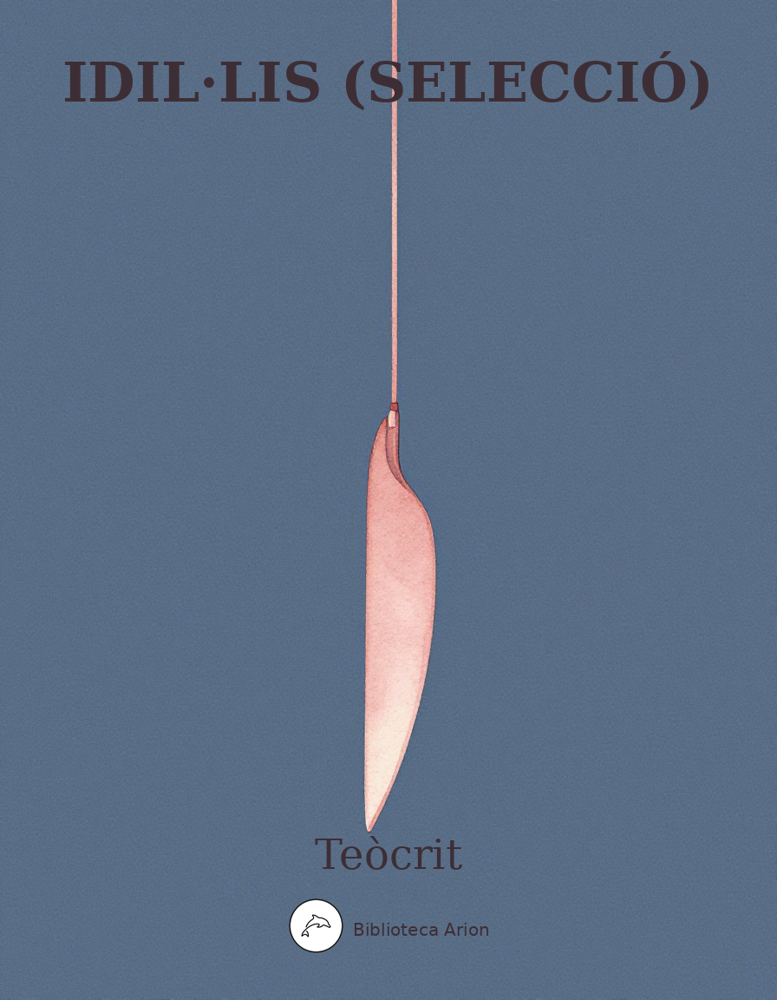

EPUBIdil·lis (selecció)
Εἰδύλλια
Selecció dels Idil·lis de Teòcrit, pare de la poesia bucòlica grega. Escenes pastorals, cants amebeus i mites en dialecte dòric.
Εἰδύλλια (Idil·lis) — Selecció
Autor: Θεόκριτος (Teòcrit) Llengua: grec antic (dialecte dòric literari) Data: c. 270 aC
Fonts
Text grec basat en l’edició crítica de A.S.F. Gow, Theocritus (Cambridge, 1952). Selecció de 7 idil·lis: I (Θύρσις ἢ ᾠδή), II (Φαρμακεύτριαι), III (Κῶμος), VI (Βουκολιασταί), VII (Θαλύσια), XI (Κύκλωψ), XV (Συρακόσιαι ἢ Ἀδωνιάζουσαι).
Font: Perseus Digital Library (https://www.perseus.tufts.edu/hopper/text?doc=Perseus%3Atext%3A1999.01.0228)
Text original de domini públic.
Idil·li 1 — Θύρσις ἢ ᾠδή
Θύρσις ἢ ᾠδή Θύρσις ῾Αδύ τι τὸ ψιθύρισμα καὶ ἁ πίτυς αἰπόλε τήνα, ἃ ποτὶ ταῖς παγαῖσι μελίσδεται, ἁδὺ δὲ καὶ τὺ συρίσδες: μετὰ Πᾶνα τὸ δεύτερον ἆθλον ἀποισῇ. αἴκα τῆνος ἕλῃ κεραὸν τράγον, αἶγα τὺ λαψῇ. 5αἴκα δ᾽ αἶγα λάβῃ τῆνος γέρας, ἐς τὲ καταρρεῖ ἁ χίμαρος: χιμάρῳ δὲ καλὸν κρέας, ἕστέ κ᾽ ἀμέλξῃς. Αἴπολος ῞Αδιον ὦ ποιμὴν τὸ τεὸν μέλος ἢ τὸ καταχὲς τῆν᾽ ἀπὸ τᾶς πέτρας καταλείβεται ὑψόθεν ὕδωρ. αἴκα ταὶ Μοῖσαι τὰν οἰίδα δῶρον ἄγωνται, 10ἄρνα τὺ σακίταν λαψῇ γέρας: αἰ δέ κ᾽ ἀρέσκῃ τήναις ἄρνα λαβεῖν, τὺ δὲ τὰν ὄιν ὕστερον ἀξῇ. Θύρσις λῇς ποτὶ τᾶν Νυμφᾶν, λῇς αἰπόλε τεῖδε καθίξας, ὡς τὸ κάταντες τοῦτο γεώλοφον αἵ τε μυρῖκαι, συρίσδεν; τὰς δ᾽ αἶγας ἐγὼν ἐν τῷδε νομευσῶ. Αἴπολος 15οὐ θέμις ὦ ποιμὴν τὸ μεσαμβρινόν, οὐ θέμις ἄμμιν συρίσδεν. τὸν Πᾶνα δεδοίκαμες: ἦ γὰρ ἀπ᾽ ἄγρας τανίκα κεκμακὼς ἀμπαύεται: ἔστι δὲ πικρός, καί οἱ ἀεὶ δριμεῖα χολὰ ποτὶ ῥινὶ κάθηται. ἀλλὰ τὺ γὰρ δὴ Θύρσι τὰ Δάφνιδος ἄλγε᾽ ἀείδες 20καὶ τᾶς βουκολικᾶς ἐπὶ τὸ πλέον ἵκεο μοίσας, δεῦρ᾽ ὑπὸ τὰν πτελέαν ἑσδώμεθα, τῶ τε Πριήπω καὶ τᾶν Κραναιᾶν κατεναντίον, ᾇπερ ὁ θῶκος τῆνος ὁ ποιμενικὸς καὶ ταὶ δρύες. αἰ δέ κ᾽ ἀείσῃς ὡς ὅκα τὸν Λιβύαθε ποτὶ Χρόμιν ᾆσας ἐρίσδων, 25αἶγα δέ τοι δωσῶ διδυματόκον ἐς τρὶς ἀμέλξαι, ἃ δύ᾽ ἔχοισ᾽ ἐρίφως ποταμέλγεται ἐς δύο πέλλας, καὶ βαθὺ κισσύβιον κεκλυσμένον ἁδέι κηρῷ, ἀμφῶες, νεοτευχές, ἔτι γλυφάνοιο ποτόσδον. τῶ περὶ μὲν χείλη μαρύεται ὑψόθι κισσός, 30κισσὸς ἑλιχρύσῳ κεκονιμένος: ἁ δὲ κατ᾽ αὐτὸν καρπῷ ἕλιξ εἱλεῖται ἀγαλλομένα κροκόεντι. ἔντοσθεν δὲ γυνά, τί θεῶν δαίδαλμα τέτυκται, ἀσκητὰ πέπλῳ τε καὶ ἄμπυκι. πὰρ δέ οἱ ἄνδρες καλὸν ἐθειράζοντες ἀμοιβαδὶς ἄλλοθεν ἄλλος νεικείουσ᾽ ἐπέεσσι. τὰ δ᾽ οὐ φρενὸς ἅπτεται αὐτᾶς: ἀλλ᾽ ὁκὰ μὲν τῆνον ποτιδέρκεται ἄνδρα γελᾶσα, ἄλλοκα δ᾽ αὖ ποτὶ τὸν ῥιπτεῖ νόον. οἱ δ᾽ ὑπ᾽ ἔρωτος δηθὰ κυλοιδιόωντες ἐτώσια μοχθίζοντι. τοῖς δὲ μετὰ γριπεύς τε γέρων πέτρα τε τέτυκται λεπράς, ἐφ᾽ ᾇ σπεύδων μέγα δίκτυον ἐς βόλον ἕλκει ὁ πρέσβυς, κάμνοντι τὸ καρτερὸν ἀνδρὶ ἐοικώς. φαίης κεν γυίων νιν ὅσον σθένος ἐλλοπιεύειν: ὧδέ οἱ ᾠδήκαντι κατ᾽ αὐχένα πάντοθεν ἶνες καὶ πολιῷ περ ἐόντι, τὸ δὲ σθένος ἄξιον ἅβας. 45τυτθὸν δ᾽ ὅσσον ἄπωθεν ἁλιτρύτοιο γέροντος πυρναίαις σταφυλαῖσι καλὸν βέβριθεν ἀλωά, τὰν ὀλίγος τις κῶρος ἐφ᾽ αἱμασιαῖσι φυλάσσει ἥμενος: ἀμφὶ δέ νιν δύ᾽ ἀλώπεκες ἁ μὲν ἀν᾽ ὄρχως φοιτῇ σινομένα τὰν τρώξιμον, ἁ δ᾽ ἐπὶ πήρᾳ 50πάντα δόλον κεύθοισα τὸ παιδίον οὐ πρὶν ἀνησεῖν φατὶ πρὶν ἢ ἀκράτιστον ἐπὶ ξηροῖσι καθίξῃ. αὐτὰρ ὅγ᾽ ἀνθερίκοισι καλὰν πλέκει ἀκριδοθήραν σχοίνῳ ἐφαρμόσδων: μέλεται δέ οἱ οὔτέ τι πήρας οὔτε φυτῶν τοσσῆνον, ὅσον περὶ πλέγματι γαθεῖ. παντᾷ δ᾽ ἀμφὶ δέπας περιπέπταται ὑγρὸς ἄκανθος: αἰολικόν τι θέαμα, τέρας κέ τυ θυμὸν ἀτύξαι. τῶ μὲν ἐγὼ πορθμεῖ Καλυδωνίῳ αἶγά τ᾽ ἔδωκα ὦνον καὶ τυρόεντα μέγαν λευκοῖο γάλακτος: οὐδέ τί πω ποτὶ χεῖλος ἐμὸν θίγεν, ἀλλ᾽ ἔτι κεῖται 60ἄχραντον. τῷ καί τυ μάλα πρόφρων ἀρεσαίμαν, αἴκά μοι τὺ φίλος τὸν ἐφίμερον ὕμνον ἀείσῃς. κοὔτί τυ κερτομέω. πόταγ᾽ ὦγαθέ: τὰν γὰρ ἀοιδὰν οὔτί πᾳ εἰς ᾿Αίδαν γε τὸν ἐκλελάθοντα φυλαξεῖς. Θύρσις ῎Αρχετε βουκολικᾶς Μοῖσαι φίλαι ἄρχετ᾽ ἀοιδᾶς. 65Θύρσις ὅδ᾽ ὡξ Αἴτνας, καὶ Θύρσιδος ἁδέα φωνά. πᾷ ποκ᾽ ἄρ᾽ ἦσθ᾽, ὅκα Δάφνις ἐτάκετο, πᾷ ποκα Νύμφαι; ἢ κατὰ Πηνειῶ καλὰ τέμπεα; ἢ κατὰ Πίνδω; οὐ γὰρ δὴ ποταμοῖο μέγαν ῥόον εἴχετ᾽ ᾿Ανάπω, οὐδ᾽ Αἴτνας σκοπιάν, οὐδ᾽ ῎Ακιδος ἱερὸν ὕδωρ. ἄρχετε βουκολικᾶς Μοῖσαι φίλαι ἄρχετ᾽ ἀοιδᾶς. τῆνον μὰν θῶες, τῆνον λύκοι ὠρύσαντο, τῆνον χὡκ δρυμοῖο λέων ἔκλαυσε θανόντα. ἄρχετε βουκολικᾶς Μοῖσαι φίλαι ἄρχετ᾽ ἀοιδᾶς. πολλαί οἱ πὰρ ποσσὶ βόες, πολλοὶ δέ τε ταῦροι, 75πολλαὶ δ᾽ αὖ δαμάλαι καὶ πόρτιες ὠδύραντο. ἄρχετε βουκολικᾶς Μοῖσαι φίλαι ἄρχετ᾽ ἀοιδᾶς. ἦνθ᾽ ῾Ερμῆς πράτιστος ἀπ᾽ ὤρεος, εἶπε δέ: ‘Δάφνι, τίς τυ κατατρύχει; τίνος ὦγαθὲ τόσσον ἐρᾶσαι;’ ἄρχετε βουκολικᾶς Μοῖσαι φίλαι ἄρχετ᾽ ἀοιδᾶς. 80ἦνθον τοὶ βοῦται, τοὶ ποιμένες, ᾡπόλοι ἦνθον: πάντες ἀνηρώτευν, τί πάθοι κακόν. ἦνθ᾽ ὁ Πρίηπος κἤφα: ‘Δάφνι τάλαν, τί τὺ τάκεαι, ἁ δέ τε κώρα πάσας ἀνὰ κράνας, πάντ᾽ ἄλσεα ποσσὶ φορεῖται– ἄρχετε βουκολικᾶς Μοῖσαι φίλαι ἄρχετ᾽ ἀοιδᾶσ– 85ζάτεισ᾽; ἆ δύσερώς τις ἄγαν καὶ ἀμήχανος ἐσσί. βούτας μὰν ἐλέγευ, νῦν δ᾽ αἰπόλῳ ἀνδρὶ ἔοικας. ᾡπόλος ὅκκ᾽ ἐσορῇ τὰς μηκάδας οἷα βατεῦνται, τάκεται ὀφθαλμώς, ὅτι οὐ τράγος αὐτὸς ἔγεντο. ἄρχετε βουκολικᾶς Μοῖσαι φίλαι ἄρχετ᾽ ἀοιδᾶς. καὶ τὺ δ᾽ ἐπεί κ᾽ ἐσορῇς τὰς παρθένος οἶα γελᾶντι, τάκεαι ὀφθαλμώς, ὅτι οὐ μετὰ ταῖσι χορεύεις.’ τὼς δ᾽ οὐδὲν ποτελέξαθ᾽ ὁ βουκόλος, ἀλλὰ τὸν αὐτῶ ἄνυε πικρὸν ἔρωτα, καὶ ἐς τέλος ἄνυε μοίρας: ἄρχετε βουκολικᾶς Μοῖσαι πάλιν ἄρχετ᾽ ἀοιδᾶς. 95ἦνθέ γε μὰν ἁδεῖα καὶ ἁ Κύπρις γελάοισα, λάθρια μὲν γελάοισα, βαρὺν δ᾽ ἀνὰ θυμὸν ἔχοισα, κεἶπε: ‘τύ θην τὸν ῎Ερωτα κατεύχεο Δάφνι λυγιξεῖν: ἦ ῥ᾽ οὐκ αὐτὸς ῎Ερωτος ὑπ᾽ ἀργαλέω ἐλυγίχθης;’ ἄρχετε βουκολικᾶς Μοῖσαι πάλιν ἄρχετ᾽ ἀοιδᾶς. τὰν δ᾽ ἄρα χὡ Δάφνις ποταμείβετο: ‘Κύπρι βαρεῖα, Κύπρι νεμεσσατά, Κύπρι θνατοῖσιν ἀπεχθής: ἤδη γὰρ φράσδῃ πάνθ᾽ ἅλιον ἄμμι δεδύκειν: Δάφνις κἠν ᾿Αίδα κακὸν ἔσσεται ἄλγος ῎Ερωτι. ἄρχετε βουκολικᾶς Μοῖσαι πάλιν ἄρχετ᾽ ἀοιδᾶς. ὧ λέγεται τὰν Κύπριν ὁ βουκόλοσ–ἕρπε ποτ᾽ ῎Ιδαν, ἕρπε ποτ᾽ ᾿Αγχίσην. τηνεῖ δρύες, ἔνθα κύπειρος: ἄρχετε βουκολικᾶς Μοῖσαι φίλαι ἄρχετ᾽ ἀοιδᾶς. ὡραῖος χὥδωνις, ἐπεὶ καὶ μᾶλα νομεύει. 110καὶ πτῶκας βάλλει καὶ θηρία πάντα διώκει. ἄρχετε βουκολικᾶς Μοῖσαι φίλαι ἄρχετ᾽ ἀοιδᾶς. αὖθις ὅπως στασῇ Διομήδεος ἆσσον ἰοῖσα, καὶ λέγε: τὸν βούταν νικῶ Δάφνιν, ἀλλὰ μάχευ μοι.’ ἄρχετε βουκολικᾶς Μοῖσαι πάλιν ἄρχετ᾽ ἀοιδᾶς. 115ὦ λύκοι, ὦ θῶες, ὦ ἀν᾽ ὤρεα φωλάδες ἄρκτοι, χαίρεθ᾽. ὁ βουκόλος ὔμμιν ἐγὼ Δάφνις οὐκέτ᾽ ἀν᾽ ὕλαν, οὐκέτ᾽ ἀνὰ δρυμώς, οὐκ ἄλσεα. χαῖρ᾽ ᾿Αρέθοισα, καὶ ποταμοί, τοὶ χεῖτε καλὸν κατὰ Θύμβριδος ὕδωρ. ἄρχετε βουκολικᾶς Μοῖσαι πάλιν ἄρχετ᾽ ἀοιδᾶς. 120Δάφνις ἐγὼν ὅδε τῆνος ὁ τὰς βόας ὧδε νομεύων, Δάφνις ὁ τὼς ταύρως καὶ πόρτιας ὧδε ποτίσδων. ἄρχετε βουκολικᾶς Μοῖσαι πάλιν ἄρχετ᾽ ἀοιδᾶς. ὦ Πὰν Πάν, εἴτ᾽ ἐσσὶ κατ᾽ ὤρεα μακρὰ Λυκαίω, εἴτε τύ γ᾽ ἀμφιπολεῖς μέγα Μαίναλον, ἔνθ᾽ ἐπὶ νᾶσον 125τὰν Σικελάν, ῾Ελίκας δὲ λίπ᾽ ἠρίον αἰπύ τε σᾶμα τῆνο Λυκαονίδαο, τὸ καὶ μακάρεσσιν ἀγητόν. λήγετε βουκολικᾶς Μοῖσαι ἴτε λήγετ᾽ ἀοιδᾶς. ἔνθ᾽ ὦναξ καὶ τάνδε φέρευ πακτοῖο μελίπνουν ἐκ κηρῶ σύριγγα καλάν, περὶ χεῖλος ἑλικτάν. 130ἦ γὰρ ἐγὼν ὑπ᾽ ἔρωτος ἐς ῞Αιδαν ἕλκομαι ἤδη. λήγετε βουκολικᾶς Μοῖσαι ἴτε λήγετ᾽ ἀοιδᾶς. νῦν δ᾽ ἴα μὲν φορέοιτε βάτοι, φορέοιτε δ᾽ ἄκανθαι, ἁ δὲ καλὰ νάρκισσος ἐπ᾽ ἀρκεύθοισι κομάσαι: πάντα δ᾽ ἔναλλα γένοιτο, καὶ ἁ πίτυς ὄχνας ἐνείκαι. Δάφνις ἐπεὶ θνάσκει: καὶ τὼς κύνας ὥλαφος ἕλκοι, κἠξ ὀρέων τοὶ σκῶπες ἀηδόσι γαρύσαιντο. λήγετε βουκολικᾶς Μοῖσαι ἴτε λήγετ᾽ ἀοιδᾶς. χὡ μὲν τόσσ᾽ εἰπὼν ἀπεπαύσατο: τὸν δ᾽ ᾿Αφροδίτα ἤθελ᾽ ἀνορθῶσαι: τά γε μὰν λίνα πάντα λελοίπει 140ἐκ Μοιρᾶν, χὡ Δάφνις ἔβα ῥόον. ἔκλυσε δίνα τὸν Μοίσαις φίλον ἄνδρα, τὸν οὐ Νύμφαισιν ἀπεχθῆ. λήγετε βουκολικᾶς Μοῖσαι ἴτε λήγετ᾽ ἀοιδᾶς. καὶ τὺ δίδου τὰν αἶγα τό τε σκύφος, ὥς κεν ἀμέλξας σπείσω ταῖς Μοίσαις. ὦ χαίρετε πολλάκι Μοῖσαι, 145χαίρετ᾽: ἐγὼ δ᾽ ὔμμιν καὶ ἐς ὕστερον ἅδιον ᾀσῶ. Αἴπολος πλῆρές τοι μέλιτος τὸ καλὸν στόμα Θύρσι γένοιτο, πλῆρές τοι σχαδόνων, καὶ ἀπ᾽ Αἰγίλω ἰσχάδα τρώγοις ἁδεῖαν, τέττιγος ἐπεὶ τύγα φέρτερον ᾁδεις. ἠνίδε τοι τὸ δέπας: θᾶσαι φίλος, ὡς καλὸν ὄσδει: 150῾Ωρᾶν πεπλύσθαί νιν ἐπὶ κράναισι δοκησεῖς. ὧδ᾽ ἴθι Κισσαίθα, τὺ δ᾽ ἄμελγέ νιν. αἱ δὲ χίμαιραι, οὐ μὴ σκιρτασεῖτε, μὴ ὁ τράγος ὔμμιν ἀναστῇ.
Idil·li 2 — Φαρμακεύτριαι
Φαρμακεύτριαι πᾷ μοι ταὶ δάφναι; φέρε Θεστυλί: πᾷ δὲ τὰ φίλτρα; στέψον τὰν κελέβαν φοινικέῳ οἰὸς ἀώτῳ, ὡς τὸν ἐμὸν βαρὺν εὖντα φίλον καταθύσομαι ἄνδρα, ὅς μοι δωδεκαταῖος ἀφ᾽ ὧ τάλας οὐδέποθ᾽ ἵκει, 5οὐδ᾽ ἔγνω πότερον τεθνάκαμες ἢ ζοοὶ εἰμές. οὐδὲ θύρας ἄραξεν ἀνάρσιος. ἦ ῥά οἱ ἀλλᾷ ᾤχετ᾽ ἔχων ὅ τ᾽ ῎Ερως ταχινὰς φρένας ἅ τ᾽ ᾿Αφροδίτα; βασεῦμαι ποτὶ τὰν Τιμαγήτοιο παλαίστραν αὔριον, ὥς νιν ἴδω, καὶ μέμψομαι οἷά με ποιεῖ. 10νῦν δέ νιν ἐκ θυέων καταθύσομαι. ἀλλὰ Σελάνα, φαῖνε καλόν: τὶν γὰρ ποταείσομαι ἅσυχα, δαῖμον, τᾷ χθονίᾳ θ᾽ ῾Εκάτα, τὰν καὶ σκύλακες τρομέοντι ἐρχομέναν νεκύων ἀνά τ᾽ ἠρία καὶ μέλαν αἷμα. χαῖρ᾽ ῾Εκάτα δασπλῆτι, καὶ ἐς τέλος ἄμμιν ὀπάδει. 15φάρμακα ταῦτ᾽ ἔρδοισα χερείονα μήτέ τι Κίρκης μήτέ τι Μηδείας μήτε ξανθᾶς Περιμήδας. ῏Ιυγξ, ἕλκε τὺ τῆνον ἐμὸν ποτὶ δῶμα τὸν ἄνδρα. ἄλφιτά τοι πρᾶτον πυρὶ τάκεται: ἀλλ᾽ ἐπίπασσε Θεστυλί. δειλαία, πᾷ τὰς φρένας ἐκπεπότασαι; 20ἦ ῥά γε τρισμυσαρὰ καὶ τὶν ἐπίχαρμα τέτυγμαι; πάσσ᾽ ἅμα καὶ λέγε ταῦτα: ‘τὰ Δέλφιδος ὀστία πάσσω.’ ἶυγξ, ἕλκε τὺ τῆνον ἐμὸν ποτὶ δῶμα τὸν ἄνδρα. Δέλφις ἔμ᾽ ἀνίασεν: ἐγὼ δ᾽ ἐπὶ Δέλφιδι δάφναν αἴθω: χὡς αὕτα λακεῖ μέγα καππυρίσασα 25κἠξαπίνας ἅφθη, κοὐδὲ σποδὸν εἴδομες αὐτᾶς, οὕτω τοι καὶ Δέλφις ἐνὶ φλογὶ σάρκ᾽ ἀμαθύνοι. ἶυγξ, ἕλκε τὺ τῆνον ἐμὸν ποτὶ δῶμα τὸν ἄνδρα. ὡς τοῦτον τὸν κηρὸν ἐγὼ σὺν δαίμονι τάκω, ὣς τάκοιθ᾽ ὑπ᾽ ἔρωτος ὁ Μύνδιος αὐτίκα Δέλφις. 30χὡς δινεῖθ᾽ ὅδε ῥόμβος ὁ χάλκεος ἐξ ᾿Αφροδίτας, ὣς τῆνος δινοῖτο ποθ᾽ ἁμετέραισι θύραισιν. ἶυγξ, ἕλκε τὺ τῆνον ἐμὸν ποτὶ δῶμα τὸν ἄνδρα. νῦν θυσῶ τὰ πίτυρα. τὺ δ᾽ ῎Αρτεμι καὶ τὸν ἐν ῞Αιδα κινήσαις ἀδάμαντα καὶ εἴ τί περ ἀσφαλὲς ἄλλο. 35Θεστυλί, ταὶ κύνες ἄμμιν ἀνὰ πτόλιν ὠρύονται. ἁ θεὸς ἐν τριόδοισι: τὸ χαλκίον ὡς τάχος ἄχει. ἶυγξ, ἕλκε τὺ τῆνον ἐμὸν ποτὶ δῶμα τὸν ἄνδρα. ἠνίδε σιγῇ μὲν πόντος, σιγῶντι δ᾽ ἀῆται: ἁ δ᾽ ἐμὰ οὐ σιγῇ στέρνων ἔντοσθεν ἀνία, 40ἀλλ᾽ ἐπὶ τήνῳ πᾶσα καταίθομαι, ὅς με τάλαιναν ἀντὶ γυναικὸς ἔθηκε κακὰν καὶ ἀπάρθενον ἦμεν. ἶυγξ, ἕλκε τὺ τῆνον ἐμὸν ποτὶ δῶμα τὸν ἄνδρα. ἐς τρὶς ἀποσπένδω καὶ τρὶς τάδε πότνια φωνέω: εἴτε γυνὰ τήνῳ παρακέκλιται εἴτε καὶ ἀνήρ, 45τόσσον ἔχοι λάθας, ὅσσόν ποκα Θησέα φαντὶ ἐν Δίᾳ λασθῆμεν ἐυπλοκάμω ᾿Αριάδνας. ἶυγξ, ἕλκε τὺ τῆνον ἐμὸν ποτὶ δῶμα τὸν ἄνδρα. ἱππομανὲς φυτόν ἐστι παρ᾽ ᾿Αρκάσι: τῷ δ᾽ ἐπὶ πᾶσαι καὶ πῶλοι μαίνονται ἀν᾽ ὤρεα καὶ θοαὶ ἵπποι. 50ὣς καὶ Δέλφιν ἴδοιμι, καὶ ἐς τόδε δῶμα περάσαι μαινομένῳ ἴκελος λιπαρᾶς ἔκτοσθε παλαίστρας. ἶυγξ, ἕλκε τὺ τῆνον ἐμὸν ποτὶ δῶμα τὸν ἄνδρα. τοῦτ᾽ ἀπὸ τᾶς χλαίνας τὸ κράσπεδον ὤλεσε Δέλφις, ὡγὼ νῦν τίλλοισα κατ᾽ ἀγρίῳ ἐν πυρὶ βάλλω. 55αἰαῖ ῎Ερως ἀνιηρέ, τί μευ μέλαν ἐκ χροὸς αἷμα ἐμφὺς ὡς λιμνᾶτις ἅπαν ἐκ βδέλλα πέπωκας; ἶυγξ, ἕλκε τὺ τῆνον ἐμὸν ποτὶ δῶμα τὸν ἄνδρα. σαύραν τοι τρίψασα ποτὸν κακὸν αὔριον οἰσῶ. Θεστυλί, νῦν δὲ λαβοῖσα τὺ τὰ θρόνα ταῦθ᾽ ὑπόμαξον 60τᾶς τήνω φλιᾶς καθ᾽ ὑπέρτερον, ἇς ἔτι καὶ νύξ, καὶ λέγ᾽ ἐπιφθύζοισα: ‘τὰ Δέλφιδος ὀστία μάσσω.’ ἶυγξ, ἕλκε τὺ τῆνον ἐμὸν ποτὶ δῶμα τὸν ἄνδρα. νῦν δὴ μώνα ἐοῖσα πόθεν τὸν ἔρωτα δακρύσω; 65ἐκ τίνος ἄρξωμαι; τίς μοι κακὸν ἄγαγε τοῦτο; ἦνθ᾽ ἁ τῶὐβούλοιο κανηφόρος ἄμμιν ᾿Αναξὼ ἄλσος ἐς ᾿Αρτέμιδος, τᾷ δὴ τόκα πολλὰ μὲν ἄλλα θηρία πομπεύεσκε περισταδόν, ἐν δὲ λέαινα. φράζεό μευ τὸν ἔρωθ᾽ ὅθεν ἵκετο, πότνα Σελάνα. 70καί μ᾽ ἁ Θευχαρίδα Θρᾷσσα τροφὸς ἁ μακαρῖτις ἀγχίθυρος ναίοισα κατεύξατο καὶ λιτάνευσε τὰν πομπὰν θάσασθαι: ἐγὼ δέ οἱ ἁ μεγάλοιτος ὡμάρτευν βύσσοιο καλὸν σύροισα χιτῶνα, κἀμφιστειλαμένα τὰν ξυστίδα τὰν Κλεαρίστας. φράζεό μευ τὸν ἔρωθ᾽ ὅθεν ἵκετο, πότνα Σελάνα. ἤδη δ᾽ εὖσα μέσον κατ᾽ ἀμαξιτόν, ᾇ τὰ Λύκωνος, εἶδον ὁμοῦ Δέλφιν τε καὶ Εὐδάμιππον ἰόντας. τοῖς δ᾽ ἦν ξανθοτέρα μὲν ἑλιχρύσοιο γενειάς, στήθεα δὲ στίλβοντα πολὺ πλέον ἢ τὺ Σελάνα, 80ὡς ἀπὸ γυμνασίοιο καλὸν πόνον ἄρτι λιπόντων. φράζεό μευ τὸν ἔρωθ᾽ ὅθεν ἵκετο, πότνα Σελάνα. χὡς ἴδον, ὡς ἐμάνην, ὥς μευ πέρι θυμὸς ἰάφθη δειλαίας: τὸ δὲ κάλλος ἐτάκετο, κοὔτέ τι πομπᾶς τήνας ἐφρασάμαν, οὐδ᾽ ὡς πάλιν οἴκαδ᾽ ἀπῆνθον 85ἔγνων: ἀλλά μέ τις καπυρὰ νόσος ἐξεσάλαξε, κείμαν δ᾽ ἐν κλιντῆρι δέκ᾽ ἄματα καὶ δέκα νύκτας. φράζεό μευ τὸν ἔρωθ᾽ ὅθεν ἵκετο, πότνα Σελάνα. καί μευ χρὼς μὲν ὁμοῖος ἐγίνετο πολλάκι θάψῳ, ἔρρευν δ᾽ ἐκ κεφαλᾶς πᾶσαι τρίχες, αὐτὰ δὲ λοιπὰ 90ὀστί᾽ ἔτ᾽ ἦς καὶ δέρμα. καὶ ἐς τίνος οὐκ ἐπέρασα ἢ ποίας ἔλιπον γραίας δόμον, ἅτις ἐπᾷδεν; ἀλλ᾽ ἦς οὐδὲν ἐλαφρόν: ὁ δέ χρόνος ἄνυτο φεύγων. φράζεό μευ τὸν ἔρωθ᾽ ὅθεν ἵκετο, πότνα Σελάνα. χοὕτω τᾷ δούλᾳ τὸν ἀλαθέα μῦθον ἔλεξα: ‘εἰ δ᾽ ἄγε Θεστυλί μοι χαλεπᾶς νόσω εὑρέ τι μῆχος. πᾶσαν ἔχει με τάλαιναν ὁ Μύνδιος: ἀλλὰ μολοῖσα τήρησον ποτὶ τὰν Τιμαγήτοιο παλαίστραν: τηνεῖ γὰρ φοιτῇ, τηνεῖ δέ οἱ ἁδὺ καθῆσθαι.’ φράζεό μευ τὸν ἔρωθ᾽ ὅθεν ἵκετο, πότνα Σελάνα. 100‘κἠπεί κά νιν ἐόντα μάθῃς μόνον, ἅσυχα νεῦσον, κεἴφ᾽ ὅτι Σιμαίθα τυ καλεῖ, καὶ ὑφαγέο τᾷδε.’ ὣς ἐφάμαν: ἁ δ᾽ ἦνθε καὶ ἄγαγε τὸν λιπαρόχρων εἰς ἐμὰ δώματα Δέλφιν: ἐγὼ δέ νιν ὡς ἐνόησα ἄρτι θύρας ὑπὲρ οὐδὸν ἀμειβόμενον ποδὶ κούφῳ– φράζεό μευ τὸν ἔρωθ᾽ ὅθεν ἵκετο, πότνα Σελάνα– πᾶσα μὲν ἐψύχθην χιόνος πλέον, ἐν δὲ μετώπῳ ἱδρώς μευ κοχύδεσκεν ἴσον νοτίαισιν ἐέρσαις, οὐδέ τι φωνᾶσαι δυνάμαν, οὐδ᾽ ὅσσον ἐν ὕπνῳ κνυζεῦνται φωνεῦντα φίλαν ποτὶ ματέρα τέκνα: 110ἀλλ᾽ ἐπάγην δαγῦδι καλὸν χρόα πάντοθεν ἴσα. φράζεό μευ τὸν ἔρωθ᾽ ὅθεν ἵκετο, πότνα Σελάνα. καί μ᾽ ἐσιδὼν ὥστοργος, ἐπὶ χθονὸς ὄμματα πήξας ἕξετ᾽ ἐπὶ κλιντῆρι καὶ ἑζόμενος φάτο μῦθον: ἦ ῥά με Σιμαίθα τόσον ἔφθασας, ὅσσον ἐγώ θην πρᾶν ποκα τὸν χαρίεντα τρέχων ἔφθασσα Φιλῖνον, ἐς τὸ τεὸν καλέσασα τόδε στέγος ἤ με παρῆμεν. φράζεό μευ τὸν ἔρωθ᾽ ὅθεν ἵκετο, πότνα Σελάνα. ἦνθον γάρ κεν ἐγώ, ναὶ τὸν γλυκὺν ἦνθον ῎Ερωτα, ἢ τρίτος ἠὲ τέταρτος ἐὼν φίλος αὐτίκα νυκτός, 120μᾶλα μὲν ἐν κόλποισι Διωνύσοιο φυλάσσων, κρατὶ δ᾽ ἔχων λεύκαν, ῾Ηρακλέος ἱερὸν ἔρνος, πάντοθε πορφυρέαισι περὶ ζώστραισιν ἑλικτάν. φράζεό μευ τὸν ἔρωθ᾽ ὅθεν ἵκετο, πότνα Σελάνα. καί μ᾽ εἰ μέν κ᾽ ἐδέχεσθε, τάδ᾽ ἦς φίλα: καὶ γὰρ ἐλαφρὸς 125καὶ καλὸς πάντεσσι μετ᾽ ἠιθέοισι καλεῦμαι: εὗδόν τ᾽, εἴ κε μόνον τὸ καλὸν στόμα τεῦς ἐφίλασα: εἰ δ᾽ ἀλλᾷ μ᾽ ὠθεῖτε καὶ ἁ θύρα εἴχετο μοχλῷ, πάντως καὶ πελέκεις καὶ λαμπάδες ἦνθον ἐφ᾽ ὑμέας. φράζεό μευ τὸν ἔρωθ᾽ ὅθεν ἵκετο, πότνα Σελάνα. νῦν δὲ χάριν μὲν ἔφαν τᾷ Κύπριδι πρᾶτον ὀφείλειν, καὶ μετὰ τὰν Κύπριν τύ με δευτέρα ἐκ πυρὸς εἵλευ ὦ γύναι ἐσκαλέσασα τεὸν ποτὶ τοῦτο μέλαθρον αὔτως ἡμίφλεκτον: ῎Ερως δ᾽ ἄρα καὶ Λιπαραίω πολλάκις ῾Ηφαίστοιο σέλας φλογερώτερον αἴθει. φράζεό μευ τὸν ἔρωθ᾽ ὅθεν ἵκετο, πότνα Σελάνα. ‘σὺν δὲ κακαῖς μανίαις καὶ παρθένον ἐκ θαλάμοιο καὶ νύμφαν ἐφόβησ᾽ ἔτι δέμνια θερμὰ λιποῖσαν ἀνέρος.’ ὣς ὁ μὲν εἶπεν: ἐγὼ δέ οἱ ἁ ταχυπειθὴς χειρὸς ἐφαψαμένα μαλακῶν ἔκλιν᾽ ἐπὶ λέκτρων. καὶ ταχὺ χρὼς ἐπὶ χρωτὶ πεπαίνετο, καὶ τὰ πρόσωπα θερμότερ᾽ ἦς ἢ πρόσθε, καὶ ἐψιθυρίσδομες ἁδύ: χὥς κά τοι μὴ μακρὰ φίλα θρυλέοιμι Σελάνα, ἐπράχθη τὰ μέγιστα, καὶ ἐς πόθον ἤνθομες ἄμφω. κοὔτέ τι τῆνος ἐμὶν ἐπεμέμψατο μέσφα τό γ᾽ ἐχθές, 145οὔτ᾽ ἐγὼ αὖ τήνῳ. ἀλλ᾽ ἦνθέ μοι ἅ τε Φιλίστας μάτηρ τᾶς ἀλαᾶς αὐλητρίδος ἅ τε Μελιξοῦς σάμερον, ἁνίκα πέρ τε ποτ᾽ ὠρανὸν ἔτρεχον ἵπποι ᾿Αῶ τὰν ῥοδόπαχυν ἀπ᾽ ᾿Ωκεανοῖο φέροισαι. κεἶπέ μοι ἄλλά τε πολλὰ καὶ ὡς ἄρα Δέλφις ἐρᾶται, 150κεἴτέ νιν αὖτε γυναικὸς ἔχει πόθος εἴτε καὶ ἀνδρός, οὐκ ἔφατ᾽ ἀτρεκὲς ἴδμεν, ἀτὰρ τόσον: αἰὲν ῎Ερωτος ἀκράτω ἐπεχεῖτο καὶ ἐς τέλος ᾤχετο φεύγων, καὶ φάτο οἱ στεφάνοισι τὰ δώματα τῆνα πυκάσδειν. ταῦτά μοι ἁ ξείνα μυθήσατο: ἔστι δ᾽ ἀλαθής: 155ἦ γάρ μοι καὶ τρὶς καὶ τετράκις ἄλλοκ᾽ ἐφοίτη, καὶ παρ᾽ ἐμὶν ἐτίθει τὰν Δωρίδα πολλάκις ὄλπαν: νῦν δέ τε δωδεκαταῖος ἀφ᾽ ὧτέ νιν οὐδὲ ποτεῖδον. ἦ ῥ᾽ οὐκ ἄλλό τι τερπνὸν ἔχει, ἁμῶν δὲ λέλασται; νῦν μὲν τοῖς φίλτροις καταθύσομαι: αἰ δ᾽ ἔτι κἠμὲ 160λυπῇ, τὰν ᾿Αίδαο πύλαν ναὶ Μοίρας ἀραξεῖ. τοῖά οἱ ἐν κίστᾳ κακὰ φάρμακα φαμὶ φυλάσσειν, ᾿Ασσυρίω δέσποινα παρὰ ξείνοιο μαθοῖσα. ἀλλὰ τὺ μὲν χαίροισα ποτ᾽ ᾿Ωκεανὸν τρέπε πώλους, πότνι᾽: ἐγὼ δ᾽ οἰσῶ τὸν ἐμὸν πόνον ὥσπερ ὑπέσταν. 165χαῖρε Σελαναία λιπαρόχροε, χαίρετε δ᾽ ἄλλοι ἀστέρες, εὐκήλοιο κατ᾽ ἄντυγα Νυκτὸς ὀπαδοί.
Idil·li 3 — Κῶμος
κῶμος Κωμάσδω ποτὶ τὰν ᾿Αμαρυλλίδα, ταὶ δέ μοι αἶγες βόσκονται κατ᾽ ὄρος, καὶ ὁ Τίτυρος αὐτὰς ἐλαύνει. Τίτυρ᾽ ἐμὶν τὸ καλὸν πεφιλαμένε, βόσκε τὰς αἶγας, καὶ ποτὶ τὰν κράναν ἄγε Τίτυρε, καὶ τὸν ἐνόρχαν 5τὸν Λιβυκὸν κνάκωνα φυλάσσεο, μή τι κορύψῃ. ̂̓Ω χαρίεσσ᾽ ᾿Αμαρυλλί, τί μ᾽ οὐκέτι τοῦτο κατ᾽ ἄντρον παρκύπτοισα καλεῖς τὸν ἐρωτύλον; ἦ ῥά με μισεῖς; ἦ ῥά γέ τοι σιμὸς καταφαίνομαι ἐγγύθεν ἦμεν, νύμφα, καὶ προγένειος; ἀπάγξασθαί με ποησεῖς. 10 ἠνίδε τοι δέκα μᾶλα φέρω: τηνῶθε καθεῖλον, ὧ μ᾽ ἐκέλευ καθελεῖν τύ: καὶ αὔριον ἄλλά τοι οἰσῶ. θᾶσαι μὰν θυμαλγὲς ἐμὸν ἄχος: αἴθε γενοίμαν ἁ βομβεῦσα μέλισσα καὶ ἐς τεὸν ἄντρον ἱκοίμαν τὸν κισσὸν διαδὺς καὶ τὰν πτέριν, ᾇ τὺ πυκάσδῃ. νῦν ἔγνων τὸν ῎Ερωτα: βαρὺς θεός: ἦ ῥα λεαίνας μαζὸν ἐθήλαζε, δρυμῷ τέ νιν ἔτρεφε μάτηρ, ὅς με κατασμύχων καὶ ἐς ὀστίον ἄχρις ἰάπτει. ὦ τὸ καλὸν ποθορεῦσα, τὸ πᾶν λίθος: ὦ κυάνοφρυ νύμφα, πρόσπτυξαί με τὸν αἰπόλον, ὥς τυ φιλάσω. 20ἔστι καὶ ἐν κενεοῖσι φιλάμασιν ἁδέα τέρψις. τὸν στέφανον τῖλαί με κατ᾽ αὐτίκα λεπτὰ ποησεῖς, τόν τοι ἐγὼν ᾿Αμαρυλλὶ φίλα κισσοῖο φυλάσσω ἀμπλέξας καλύκεσσι καὶ εὐόδμοισι σελίνοις.– ῎Ωμοι ἐγώ, τί πάθω; τί ὁ δύσσοος; οὐχ ὑπακούεις;– 25 τὰν βαίταν ἀποδὺς ἐς κύματα τηνῶ ἁλεῦμαι, ὧπερ τὼς θύννως σκοπιάζεται ῎Ολπις ὁ γριπεύς: καἴκα δἠποθάνω, τό γε μὰν τεὸν ἁδὺ τέτυκται. ἔγνων πρᾶν, ὅκα μευ μεμναμένω, εἰ φιλέεις με, οὐδὲ τὸ τηλέφιλον ποτεμάξατο, τὸ πλατάγημα, 30ἀλλ᾽ αὔτως ἁπαλῷ ποτὶ πάχεος ἐξεμαράνθη. εἶπε καὶ ἀγροιῶτις ἀλαθέα κοσκινόμαντις, ἁ πρᾶν ποιολογεῦσα Παραιβάτις, οὕνεκ᾽ ἐγὼ μὲν τὶν ὅλος ἔγκειμαι, τὺ δέ μευ λόγον οὐδένα ποιῇ. ἦ μάν τοι λευκὰν διδυματόκον αἶγα φυλάσσω, 35τάν με καὶ ἁ Μέρμνωνος ἐριθακὶς ἁ μελανόχρως αἰτεῖ, καὶ δωσῶ οἱ, ἐπεὶ τύ μοι ἐνδιαθρύπτῃ. ῞Αλλεται ὀφθαλμός μευ ὁ δεξιός: ἦ ῥά γ᾽ ἰδησῶ αὐτάν; ᾀσεῦμαι ποτὶ τὰν πίτυν ὧδ᾽ ἀποκλινθείς, καί κέ μ᾽ ἴσως ποτίδοι, ἐπεὶ οὐκ ἀδαμαντίνα ἐστίν. 40 ῾Ιππομένης ὅκα δὴ τὰν παρθένον ἤθελε γᾶμαι, μᾶλ᾽ ἐν χερσὶν ἑλὼν δρόμον ἄνυεν: ἁ δ᾽ ᾿Αταλάντα ὡς ἴδεν, ὡς ἐμάνη, ὡς ἐς βαθὺν ἅλατ᾽ ἔρωτα. τὰν ἀγέλαν χὡ μάντις ἀπ᾽ ῎Οθρυος ἆγε Μελάμπους ἐς Πύλον: ἁ δὲ Βίαντος ἐν ἀγκοίναισιν ἐκλίνθη, 45μάτηρ ἁ χαρίεσσα περίφρονος ᾿Αλφεσιβοίης. τὰν δὲ καλὰν Κυθέρειαν ἐν ὤρεσι μᾶλα νομεύων οὐχ οὑτῶς ὥδωνις ἐπὶ πλέον ἄγαγε λύσσας, ὥστ᾽ οὐδὲ φθίμενόν νιν ἄτερ μαζοῖο τίθητι; ζαλωτὸς μὲν ἐμὶν ὁ τὸν ἄτροπον ὕπνον ἰαύων 50᾿Ενδυμίων, ζαλῶ δὲ φίλα γύναι ᾿Ιασίωνα, ὃς τοσσῆν᾽ ἐκύρησεν, ὅσ᾽ οὐ πευσεῖσθε βέβαλοι. ᾿Αλγέω τὰν κεφαλάν, τὶν δ᾽ οὐ μέλει. οὐκέτ᾽ ἀείδω, κεισεῦμαι δὲ πεσών, καὶ τοὶ λύκοι ὧδέ μ᾽ ἔδονται. ὡς μέλι τοι γλυκὺ τοῦτο κατὰ βρόχθοιο γένοιτο.
Idil·li 6 — Βουκολιασταί
Βουκολιασταὶ Δάφνις καὶ Δαμοίτας Δαμοίτας χὡ Δάφνις ὁ βουκόλος εἰς ἕνα χῶρον τὰν ἀγέλαν πόκ᾽ ῎Αρατε συνάγαγον: ἦς δ᾽ ὁ μὲν αὐτῶν πυρρός, ὁ δ᾽ ἡμιγένειος: ἐπὶ κράναν δέ τιν᾽ ἄμφω ἑζόμενοι θέρεος μέσῳ ἄματι τοιάδ᾽ ἄειδον. 5πρᾶτος δ᾽ ἄρξατο Δάφνις, ἐπεὶ καὶ πρᾶτος ἔρισδε. βάλλει τοι Πολύφαμε τὸ ποίμνιον ἁ Γαλάτεια μάλοισιν, δυσέρωτα τὸν αἰπόλον ἄνδρα καλεῦσα: καὶ τύ νιν οὐ ποθόρησθα τάλαν τάλαν, ἀλλὰ κάθησαι ἁδέα συρίσδων. πάλιν ἅδ᾽ ἴδε τὰν κύνα βάλλει, 10ἅ τοι τᾶν ὀίων ἕπεται σκοπός: ἁ δὲ βαΰσδει εἰς ἅλα δερκομένα, τὰ δέ νιν καλὰ κύματα φαίνει ἅσυχα καχλάζοντα ἐπ᾽ αἰγιαλοῖο θέοισαν. φράζεο μὴ τᾶς παιδὸς ἐπὶ κνάμαισιν ὀρούσῃ ἐξ ἁλὸς ἐρχομένας, κατὰ δὲ χρόα καλὸν ἀμύξῃ. 15ἁ δὲ καὶ αὐτόθε τοι διαθρύπτεται, ὡς ἀπ᾽ ἀκάνθας ταὶ καπυραὶ χαῖται, τὸ καλὸν θέρος ἁνίκα φρύγει: καὶ φεύγει φιλέοντα καὶ οὐ φιλέοντα διώκει, καὶ τὸν ἀπὸ γραμμᾶς κινεῖ λίθον: ἦ γὰρ ἔρωτι πολλάκις ὦ Πολύφαμε τὰ μὴ καλὰ καλὰ πέφανται. 20 τῷ δ᾽ ἐπὶ Δαμοίτας ἀνεβάλλετο καὶ τάδ᾽ ἄειδεν. εἶδον ναὶ τὸν Πᾶνα, τὸ ποίμνιον ἁνίκ᾽ ἔβαλλε, κοὔ μ᾽ ἔλαθ᾽, οὔ, τὸν ἐμὸν ἕνα τὸν γλυκύν, ᾧπερ ὅρημι ἐς τέλος: αὐτὰρ ὁ μάντις ὁ Τήλεμος ἔχθρ᾽ ἀγορεύων ἐχθρὰ φέροι ποτὶ οἶκον, ὅπως τεκέεσσι φυλάσσοι. 25ἀλλὰ καὶ αὐτὸς ἐγὼ κνίζων πάλιν οὐ ποθόρημι, ἀλλ᾽ ἄλλαν τινὰ φαμὶ γυναῖκ᾽ ἔχεν: ἁ δ᾽ ἀίοισα ζαλοῖ μ᾽ ὦ Παιὰν καὶ τάκεται, ἐκ δὲ θαλάσσας οἰστρεῖ παπταίνοισα ποτ᾽ ἄντρά τε καὶ ποτὶ ποίμνας. σίξα δ᾽ ὑλακτεῖν νιν καὶ τᾷ κυνί: καὶ γὰρ ὅκ᾽ ἤρων 30αὐτᾶς, ἐκνυζεῖτο ποτ᾽ ἰσχία ῥύγχος ἔχοισα. ταῦτα δ᾽ ἴσως ἐσορεῦσα ποεῦντά με πολλάκι πεμψεῖ ἄγγελον. αὐτὰρ ἐγὼ κλᾳξῶ θύρας, ἕστέ κ᾽ ὀμόσσῃ αὐτά μοι στορεσεῖν καλὰ δέμνια τᾶσδ᾽ ἐπὶ νάσω. καὶ γάρ θην οὐδ᾽ εἶδος ἔχω κακόν, ὥς με λέγοντι. 35ἦ γὰρ πρᾶν ἐς πόντον ἐσέβλεπον, ἦς δὲ γαλάνα, καὶ καλὰ μὲν τὰ γένεια, καλὰ δέ μευ ἁ μία κώρα, ὡς παρ᾽ ἐμὶν κέκριται, κατεφαίνετο, τῶν δέ τ᾽ ὀδόντων λευκοτέραν αὐγὰν Παρίας ὑπέφαινε λίθοιο. ὡς μὴ βασκανθῶ δέ, τρὶς εἰς ἐμὸν ἔπτυσα κόλπον: 40ταῦτα γὰρ ἁ γραία με Κοτυταρὶς ἐξεδίδαξε. ἃ πρᾶν ἀμάντεσσι παρ᾽ ῾Ιπποκίωνι ποταύλει. τόσσ᾽ εἰπὼν τὸν Δάφνιν ὁ Δαμοίτας ἐφίλησε, χὡ μὲν τῷ σύριγγ᾽, ὁ δὲ τῷ καλὸν αὐλὸν ἔδωκεν. αὔλει Δαμοίτας, σύρισδε δὲ Δάφνις ὁ βούτας, 45ὠρχεῦντ᾽ ἐν μαλακᾷ ταὶ πόρτιες αὐτίκα ποίᾳ. νίκη μὰν οὐδάλλος, ἀνήσσατοι δ᾽ ἐγένοντο.
Idil·li 7 — Θαλύσια
θαλύσια ̂̓Ης χρόνος ἁνίκ᾽ ἐγώ τε καὶ Εὔκριτος ἐς τὸν ῞Αλεντα εἵρπομες ἐκ πόλιος, σὺν καὶ τρίτος ἁμὶν ᾿Αμύντας: τᾷ Δηοῖ γὰρ ἔτευχε θαλύσια καὶ Φρασίδαμος κἀντιγένης, δύο τέκνα Λυκωπέος, εἴ τί περ ἐσθλὸν 5χᾳῶν τῶν ἐπάνωθεν, ἀπὸ Κλυτίας τε καὶ αὐτῶ Χάλκωνος, Βούριναν ὃς ἐκ ποδὸς ἄνυσε κράναν εὖ ἐνερεισάμενος πέτρᾳ γόνυ: ταὶ δὲ παρ᾽ αὐτὰν αἴγειροι πτελέαι τε ἐύσκιον ἄλσος ὕφαινον, χλωροῖσιν πετάλοισι κατηρεφέες κομόωσαι. 10κοὔπω τὰν μεσάταν ὁδὸν ἄνυμες, οὐδὲ τὸ σᾶμα ἁμὶν τὸ Βρασίλα κατεφαίνετο, καὶ τὸν ὁδίταν ἐσθλὸν σὺν Μοίσαισι Κυδωνικὸν εὕρομες ἄνδρα, οὔνομα μὲν Λυκίδαν, ἦς δ᾽ αἰπόλος, οὐδέ κέ τίς νιν ἠγνοίησεν ἰδών, ἐπεὶ αἰπόλῳ ἔξοχ᾽ ἐῴκει. 15ἐκ μὲν γὰρ λασίοιο δασύτριχος εἶχε τράγοιο κνακὸν δέρμ᾽ ὤμοισι νέας ταμίσοιο ποτόσδον, ἀμφὶ δέ οἱ στήθεσσι γέρων ἐσφίγγετο πέπλος ζωστῆρι πλακερῷ, ῥοικὰν δ᾽ ἔχεν ἀγριελαίω δεξιτερᾷ κορύναν. καί μ᾽ ἀτρέμας εἶπε σεσαρὼς 20ὄμματι μειδιόωντι, γέλως δέ οἱ εἴχετο χείλευς: ‘Σιμιχίδα, πᾷ δὴ τὸ μεσαμέριον πόδας ἕλκεις, ἁνίκα δὴ καὶ σαῦρος ἐν αἱμασιαῖσι καθεύδει, οὐδ᾽ ἐπιτυμβίδιαι κορυδαλλίδες ἠλαίνοντι; ἦ μετὰ δαῖτα κλητὸς ἐπείγεαι; ἤ τινος ἀστῶν 25λανὸν ἔπι θρώσκεις; ὥς τοι ποσὶ νισσομένοιο πᾶσα λίθος πταίοισα ποτ᾽ ἀρβυλίδεσσιν ἀείδει.’ τὸν δ᾽ ἐγὼ ἀμείφθην: ‘Λυκίδα φίλε, φαντί τυ πάντες συριγκτὰν ἔμεναι μέγ᾽ ὑπείροχον ἔν τε νομεῦσιν ἔν τ᾽ ἀμητήρεσσι. τὸ δὴ μάλα θυμὸν ἰαίνει 30ἁμέτερον: καί τοι κατ᾽ ἐμὸν νόον ἰσοφαρίζειν ἔλπομαι. ἁ δ᾽ ὁδὸς ἅδε θαλυσιάς: ἦ γὰρ ἑταῖροι ἀνέρες εὐπέπλῳ Δαμάτερι δαῖτα τελεῦντι ὄλβω ἀπαρχόμενοι: μάλα γάρ σφισι πίονι μέτρῳ ἁ δαίμων εὔκριθον ἀνεπλήρωσεν ἀλωάν. 35ἀλλ᾽ ἄγε δή–ξυνὰ γὰρ ὁδός, ξυνὰ δὲ καὶ ἀώσ– βουκολιασδώμεσθα: τάχ᾽ ὥτερος ἄλλον ὀνασεῖ. καὶ γὰρ ἐγὼ Μοισᾶν καπυρὸν στόμα, κἠμὲ λέγοντι πάντες ἀοιδὸν ἄριστον: ἐγὼ δέ τις οὐ ταχυπειθής, οὐ Δᾶν: οὐ γάρ πω κατ᾽ ἐμὸν νόον οὔτε τὸν ἐσθλὸν 40Σικελίδαν νίκημι τὸν ἐκ Σάμω οὔτε Φιλητᾶν ἀείδων, βάτραχος δὲ ποτ᾽ ἀκρίδας ὥς τις ἐρίσδω.’ ὣς ἐφάμαν ἐπίταδες: ὁ δ᾽ αἰπόλος ἁδὺ γελάσσας, ‘τάν τοι” ἔφα “κορύναν δωρύττομαι, οὕνεκεν ἐσσὶ πᾶν ἐπ᾽ ἀλαθείᾳ πεπλασμένον ἐκ Διὸς ἔρνος. 45ὥς μοι καὶ τέκτων μέγ᾽ ἀπέχθεται, ὅστις ἐρευνῇ ἶσον ὄρευς κορυφᾷ τελέσαι δόμον εὐρυμέδοντος, καὶ Μοισᾶν ὄρνιχες, ὅσοι ποτὶ Χῖον ἀοιδὸν ἀντία κοκκύζοντες ἐτώσια μοχθίζοντι. ἀλλ᾽ ἄγε βουκολικᾶς ταχέως ἀρχώμεθ᾽ ἀοιδᾶς, 50Σιμιχίδα: κἠγὼ μέν–ὅρη φίλος, εἴ τοι ἀρέσκει τοῦθ᾽ ὅ τι πρᾶν ἐν ὄρει τὸ μελύδριον ἐξεπόνασα.’ Λυκίδας ῎Εσσεται ᾿Αγεάνακτι καλὸς πλόος ἐς Μυτιλήναν, χὥταν ἐφ᾽ ἑσπερίοις ἐρίφοις νότος ὑγρὰ διώκῃ κύματα, χὡρίων ὅτ᾽ ἐπ᾽ ὠκεανῷ πόδας ἴσχῃ, 55αἴκεν τὸν Λυκίδαν ὀπτεύμενον ἐξ ᾿Αφροδίτας ῥύσηται: θερμὸς γὰρ ἔρως αὐτῶ με καταίθει. χἁλκυόνες στορεσεῦντι τὰ κύματα τάν τε θάλασσαν τόν τε νότον τόν τ᾽ εὖρον, ὃς ἔσχατα φυκία κινεῖ: ἁλκυόνες, γλαυκαῖς Νηρηίσι ταί τε μάλιστα 60ὀρνίχων ἐφίλαθεν, ὅσαις τέ περ ἐξ ἁλὸς ἄγρα. ᾿Αγεάνακτι πλόον διζημένῳ ἐς Μυτιλήναν ὥρια πάντα γένοιτο, καὶ εὔπλοξν ὅρμον ἵκοιτο. κἠγὼ τῆνο κατ᾽ ἆμαρ ἀνήτινον ἢ ῥοδόεντα ἢ καὶ λευκοΐων στέφανον περὶ κρατὶ φυλάσσων 65τὸν Πτελεατικὸν οἶνον ἀπὸ κρατῆρος ἀφυξῶ πὰρ πυρὶ κεκλιμένος, κύαμον δέ τις ἐν πυρὶ φρυξεῖ. χἁ στιβὰς ἐσσεῖται πεπυκασμένα ἕστ᾽ ἐπὶ πᾶχυν κνύζᾳ τ᾽ ἀσφοδέλῳ τε πολυγνάμπτῳ τε σελίνῳ. καὶ πίομαι μαλακῶς μεμνημένος ᾿Αγεάνακτος 70αὐταῖσιν κυλίκεσσι καὶ ἐς τρύγα χεῖλος ἐρείδων. αὐλησεῦντι δέ μοι δύο ποιμένες, εἷς μὲν ᾿Αχαρνεύς, εἷς δὲ Λυκωπίτας: ὁ δὲ Τίτυρος ἐγγύθεν ᾀσεῖ, ὥς ποκα τᾶς Ξενέας ἠράσσατο Δάφνις ὁ βούτας, χὡς ὄρος ἀμφ᾽ ἐπονεῖτο, καὶ ὡς δρύες αὐτὸν ἐθρήνευν, 75῾Ιμέρα αἵτε φύοντι παρ᾽ ὄχθῃσιν ποταμοῖο, εὖτε χιὼν ὥς τις κατετάκετο μακρὸν ὑφ᾽ Αἷμον ἢ ῎Αθω ἢ ῾Ροδόπαν ἢ Καύκασον ἐσχατόωντα. ᾀσεῖ δ᾽ ὥς ποκ᾽ ἔδεκτο τὸν αἰπόλον εὐρέα λάρναξ ζωὸν ἐόντα κακαῖσιν ἀτασθαλίαισιν ἄνακτος, 80ὥς τέ νιν αἱ σιμαὶ λειμωνόθε φέρβον ἰοῖσαι κέδρον ἐς ἁδεῖαν μαλακοῖς ἄνθεσσι μέλισσαι, οὕνεκά οἱ γλυκὺ Μοῖσα κατὰ στόματος χέε νέκταρ. ὦ μακαριστὲ Κομάτα, τύ θην τάδε τερπνὰ πεπόνθεις, καὶ τὺ κατεκλᾴσθης ἐς λάρνακα, καὶ τὺ μελισσᾶν 85κηρία φερβόμενος ἔτος ὥριον ἐξεπόνασας. αἴθ᾽ ἐπ᾽ ἐμεῦ ζωοῖς ἐναρίθμιος ὤφελες εἶμεν, ὥς τοι ἐγὼν ἐνόμευον ἀν᾽ ὤρεα τὰς καλὰς αἶγας φωνᾶς εἰσαΐων, τὺ δ᾽ ὑπὸ δρυσὶν ἢ ὑπὸ πεύκαις ἁδὺ μελισδόμενος κατεκέκλισο θεῖε Κομάτα. 90 χὡ μὲν τόσσ᾽ εἰπὼν ἀπεπαύσατο: τὸν δὲ μετ᾽ αὖθις κἠγὼ τοῖ᾽ ἐφάμαν: ‘Λυκίδα φίλε, πολλὰ μὲν ἄλλα νύμφαι κἠμὲ δίδαξαν ἀν᾽ ὤρεα βουκολέοντα ἐσθλά, τά που καὶ Ζηνὸς ἐπὶ θρόνον ἄγαγε φάμα: ἀλλὰ τόγ᾽ ἐκ πάντων μέγ᾽ ὑπείροχον, ᾧ τυ γεραίρειν ἀρξεῦμ᾽: ἀλλ᾽ ὑπάκουσον, ἐπεὶ φίλος ἔπλεο Μοίσαις.’ Σιμιχίδας Σιμιχίδᾳ μὲν ῎Ερωτες ἐπέπταρον: ἦ γὰρ ὁ δειλὸς τόσσον ἐρᾷ Μυρτοῦς, ὅσον εἴαρος αἶγες ἐρᾶντι. ὥρατος δ᾽ ὁ τὰ πάντα φιλαίτατος ἀνέρι τήνῳ παιδὸς ὑπὸ σπλάγχνοισιν ἔχει πόθον. οἶδεν ῎Αριστις, ἐσθλὸς ἀνήρ, μέγ᾽ ἄριστος, ὃν οὐδέ κεν αὐτὸς ἀείδειν Φοῖβος σὺν φόρμιγγι παρὰ τριπόδεσσι μεγαίροι, ὡς ἐκ παιδὸς ῎Αρατος ὑπ᾽ ὀστέον αἴθετ᾽ ἔρωτι. τόν μοι Πάν, ῾Ομόλας ἐρατὸν πέδον ὅστε λέλογχας, ἄκλητον κείνοιο φίλας ἐς χεῖρας ἐρείσαις, 105εἴτ᾽ ἐστ᾽ ἆρα Φιλῖνος ὁ μαλθακὸς εἴτέ τις ἄλλος. κἢν μὲν ταῦτ᾽ ἔρδῃς ὦ Πὰν φίλε, μή τί τυ παῖδες ᾿Αρκαδικοὶ σκίλλαισιν ὑπὸ πλευράς τε καὶ ὤμους τανίκα μαστίσδοιεν, ὅτε κρέα τυτθὰ παρείη: εἰ δ᾽ ἄλλως νεύσαις, κατὰ μὲν χρόα πάντ᾽ ὀνύχεσσι 110δακνόμενος κνάσαιο καὶ ἐν κνίδαισι καθεύδοις, εἴης δ᾽ ᾿Ηδωνῶν μὲν ἐν ὤρεσι χείματι μέσσῳ ῞Εβρον πὰρ ποταμὸν τετραμμένος ἐγγύθεν ἄρκτω, ἐν δὲ θέρει πυμάτοισι παρ᾽ Αἰθιόπεσσι νομεύοις πέτρᾳ ὕπο Βλεμύων, ὅθεν οὐκέτι Νεῖλος ὁρατός. 115ὔμμες δ᾽ ῾Υετίδος καὶ Βυβλίδος ἁδὺ λιπόντες νᾶμα καὶ Οἰκεῦντα, ξανθᾶς ἕδος αἰπὺ Διώνας, ὦ μάλοισιν ῎Ερωτες ἐρευθομένοισιν ὁμοῖοι, βάλλετέ μοι τόξοισι τὸν ἱμερόεντα Φιλῖνον, βάλλετ᾽, ἐπεὶ τὸν ξεῖνον ὁ δύσμορος οὐκ ἐλεεῖ μευ. 120καὶ δὴ μὰν ἀπίοιο πεπαίτερος, αἱ δὲ γυναῖκες ‘αἰαῖ” φαντὶ “Φιλῖνε, τό τοι καλὸν ἄνθος ἀπορρεῖ.’ μηκέτι τοι φρουρέωμες ἐπὶ προθύροισιν ῎Αρατε, μηδὲ πόδας τρίβωμες: ὁ δ᾽ ὄρθριος ἄλλον ἀλέκτωρ κοκκύζων νάρκαισιν ἀνιαραῖσι διδοίη, εἷς δ᾽ ἀπὸ τᾶσδε φέριστε Μόλων ἄγχοιτο παλαίστρας, ἄμμιν δ᾽ ἁσυχία τε μέλοι γραία τε παρείη, ἅτις ἐπιφθύζοισα τὰ μὴ καλὰ νόσφιν ἐρύκοι. τόσσ᾽ ἐφάμαν: ὁ δέ μοι τὸ λαγωβόλον, ἁδὺ γελάσσας ὡς πάρος, ἐκ Μοισᾶν ξεινήιον ὤπασεν εἶμεν. 130χὡ μὲν ἀποκλίνας ἐπ᾽ ἀριστερὰ τὰν ἐπὶ Πύξας εἷρφ᾽ ὁδόν, αὐτὰρ ἐγώ τε καὶ Εὔκριτος ἐς Φρασιδάυω στραφθέντες χὡ καλὸς ᾿Αμύντιχος ἔν τε βαθείαις ἁδείας σχοίνοιο χαμευνίσιν ἐκλίνθημες ἔν τε νεοτμάτοισι γεγαθότες οἰναρέοισι. 135πολλαὶ δ᾽ ἁμὶν ὕπερθε κατὰ κρατὸς δονέοντο αἴγειροι πτελέαι τε: τὸ δ᾽ ἐγγύθεν ἱερὸν ὕδωρ Νυμφᾶν ἐξ ἄντροιο κατειβόμενον κελάρυζε. τοὶ δὲ ποτὶ σκιαραῖς ὀροδαμνίσιν αἰθαλίωνες τέττιγες λαλαγεῦντες ἔχον πόνον: ἁ δ᾽ ὀλολυγὼν 140τηλόθεν ἐν πυκιναῖσι βάτων τρύζεσκεν ἀκάνθαις. ἄειδον κόρυδοι καὶ ἀκανθίδες, ἔστενε τρυγών, πωτῶντο ξουθαὶ περὶ πίδακας ἀμφὶ μέλισσαι. πάντ᾽ ὦσδεν θέρεος μάλα πίονος, ὦσδε δ᾽ ὀπώρας. ὄχναι μὲν πὰρ ποσσί, παρὰ πλευραῖσι δὲ μᾶλα 145δαψιλέως ἁμῖν ἐκυλίνδετο: τοὶ δ᾽ ἐκέχυντο ὄρπακες βραβίλοισι καταβρίθοντες ἔραζε: τετράενες δὲ πίθων ἀπελύετο κρατὸς ἄλειφαρ. νύμφαι Κασταλίδες Παρνάσιον αἶπος ἔχοισαι, ἆρά γέ πᾳ τοιόνδε Φόλω κατὰ λάινον ἄντρον 150κρατῆρ᾽ ῾Ηρακλῆι γέρων ἐστήσατο Χείρων; ἆρά γέ πᾳ τῆνον τὸν ποιμένα τὸν ποτ᾽ ᾿Ανάπῳ, τὸν κρατερὸν Πολύφαμον, ὃς ὤρεσι νᾶας ἔβαλλε, τοῖον νέκταρ ἔπεισε κατ᾽ αὐλία ποσσὶ χορεῦσαι, οἷον δὴ τόκα πῶμα διεκρανάσατε Νύμφαι 155βωμῷ πὰρ Δάματρος ἀλῳάδος; ἇς ἐπὶ σωρῷ αὖθις ἐγὼ πάξαιμι μέγα πτύον, ἁ δὲ γελάσσαι δράγματα καὶ μάκωνας ἐν ἀμφοτέραισιν ἔχοισα.
Idil·li 11 — Κύκλωψ
Κύκλωψ οὐδὲν πὸτ τὸν ἔρωτα πεφύκει φάρμακον ἄλλο Νικία οὔτ᾽ ἔγχριστον, ἐμὶν δοκεῖ, οὔτ᾽ ἐπίπαστον, ἢ ταὶ Πιερίδες: κοῦφον δέ τι τοῦτο καὶ ἁδὺ γίνετ᾽ ἐπ᾽ ἀνθρώποις, εὑρεῖν δ᾽ οὐ ῥᾴδιόν ἐστι. 5γινώσκειν δ᾽ οἶμαί τυ καλῶς ἰατρὸν ἐόντα καὶ ταῖς ἐννέα δὴ πεφιλάμενον ἔξοχα Μοίσαις. οὕτω γοῦν ῥάιστα διᾶγ᾽ ὁ Κύκλωψ ὁ παρ᾽ ἁμῖν, ὡρχαῖος Πολύφαμος, ὅκ᾽ ἤρατο τᾶς Γαλατείας, ἄρτι γενειάσδων περὶ τὸ στόμα τὼς κροτάφως τε. 10ἤρατο δ᾽ οὐ μάλοις οὐδὲ ῥόδῳ οὐδὲ κικίννοις, ἀλλ᾽ ὀρθαῖς μανίαις, ἁγεῖτο δὲ πάντα πάρεργα. πολλάκι ταὶ ὄιες ποτὶ ταὐλίον αὐταὶ ἀπῆνθον χλωρᾶς ἐκ βοτάνας: ὁ δὲ τὰν Γαλάτειαν ἀείδων αὐτόθ᾽ ἐπ᾽ ἀιόνος κατετάκετο φυκιοέσσας 15ἐξ ἀοῦς, ἔχθιστον ἔχων ὑποκάρδιον ἕλκος Κύπριδος ἐκ μεγάλας, τό οἱ ἥπατι πᾶξε βέλεμνον. ἀλλὰ τὸ φάρμακον εὗρε, καθεζόμενος δ᾽ ἐπὶ πέτρας ὑψηλᾶς ἐς πόντον ὁρῶν ἄειδε τοιαῦτα. ̂̓Ω λευκὰ Γαλάτεια, τί τὸν φιλέοντ᾽ ἀποβάλλῃ; 20λευκοτέρα πακτᾶς ποτιδεῖν, ἁπαλωτέρα ἀρνός, μόσχω γαυροτέρα, σφριγανωτέρα ὄμφακος ὠμᾶς. φοιτῇς δ᾽ αὖθ᾽ οὑτῶς, ὅκκα γλυκὺς ὕπνος ἔχῃ με, οἴχῃ δ᾽ εὐθὺς ἰοῖσ᾽, ὅκκα γλυκὺς ὕπνος ἀνῇ με, φεύγεις δ᾽ ὥσπερ ὄις πολιὸν λύκον ἀθρήσασα. 25ἠράσθην μὲν ἔγωγα τεοῦς κόρα, ἁνίκα πρᾶτον ἦνθες ἐμᾷ σὺν ματρὶ θέλοισ᾽ ὑακίνθινα φύλλα ἐξ ὄρεος δρέψασθαι, ἐγὼ δ᾽ ὁδὸν ἁγεμόνευον. παύσασθαι δ᾽ ἐσιδών τυ καὶ ὕστερον οὐδέ τί πᾳ νῦν ἐκ τήνω δύναμαι: τὶν δ᾽ οὐ μέλει, οὐ μὰ Δί᾽ οὐδέν. 30γινώσκω χαρίεσσα κόρα, τίνος ὥνεκα φεύγεις: ὥνεκά μοι λασία μὲν ὀφρῦς ἐπὶ παντὶ μετώπῳ ἐξ ὠτὸς τέταται ποτὶ θὥτερον ὦς μία μακρά, εἷς δ᾽ ὀφθαλμὸς ἔπεστι, πλατεῖα δὲ ῥὶς ἐπὶ χείλει. ἀλλ᾽ οὗτος τοιοῦτος ἐὼν βοτὰ χίλια βόσκω, 35κἠκ τούτων τὸ κράτιστον ἀμελγόμενος γάλα πίνω: τυρὸς δ᾽ οὐ λείπει μ᾽ οὔτ᾽ ἐν θέρει οὔτ᾽ ἐν ὀπώρᾳ, οὐ χειμῶνος ἄκρω: ταρσοὶ δ᾽ ὑπεραχθέες αἰεί. συρίσδεν δ᾽ ὡς οὔτις ἐπίσταμαι ὧδε Κυκλώπων, τὶν τὸ φίλον γλυκύμαλον ἁμᾷ κἠμαυτὸν ἀείδων πολλάκι νυκτὸς ἀωρί. τρέφω δέ τοι ἕνδεκα νεβρὼς πάσας μηνοφόρως καὶ σκύμνως τέσσαρας ἄρκτων. ἀλλ᾽ ἀφίκευσο ποθ᾽ ἁμέ, καὶ ἑξεῖς οὐδὲν ἔλασσον, τὰν γλαυκὰν δὲ θάλασσαν ἔα ποτὶ χέρσον ὀρεχθεῖν. ἅδιον ἐν τὤντρῳ παρ᾽ ἐμὶν τὰν νύκτα διαξεῖς. 45ἐντὶ δάφναι τηνεῖ, ἐντὶ ῥαδιναὶ κυπάρισσοι, ἔστι μέλας κισσός, ἔστ᾽ ἄμπελος ἁ γλυκύκαρπος, ἔστι ψυχρὸν ὕδωρ, τό μοι ἁ πολυδένδρεος Αἴτνα λευκᾶς ἐκ χιόνος ποτὸν ἀμβρόσιον προΐητι. τίς κα τῶνδε θάλασσαν ἔχειν καὶ κύμαθ᾽ ἕλοιτο; 50αἰ δέ τοι αὐτὸς ἐγὼ δοκέω λασιώτερος ἦμεν, ἐντὶ δρυὸς ξύλα μοι καὶ ὑπὸ σποδῷ ἀκάματον πῦρ. καιόμενος δ᾽ ὑπὸ τεῦς καὶ τὰν ψυχὰν ἀνεχοίμαν καὶ τὸν ἕν᾽ ὀφθαλμόν, τῶ μοι γλυκερώτερον οὐδέν. ὤμοι, ὅ τ᾽ οὐκ ἔτεκέν μ᾽ ἁ μάτηρ βραγχί᾽ ἔχοντα, 55ὡς κατέδυν ποτὶ τὶν καὶ τὰν χέρα τευς ἐφίλασα, αἰ μὴ τὸ στόμα λῇς, ἔφερον δέ τοι ἢ κρίνα λευκὰ ἢ μάκων᾽ ἁπαλὰν ἐρυθρὰ πλαταγώνι᾽ ἔχοισαν. ἀλλὰ τὰ μὲν θέρεος, τὰ δὲ γίνεται ἐν χειμῶνι, ὥστ᾽ οὐκ ἄν τοι ταῦτα φέρειν ἅμα πάντ᾽ ἐδυνάθην. 60νῦν μὰν ὦ κόριον, νῦν αὐτόγα νεῖν κε μάθοιμι, αἴκά τις σὺν ναῒ πλέων ξένος ὧδ᾽ ἀφίκηται, ὡς εἰδῶ, τί ποθ᾽ ἁδὺ κατοικεῖν τὸν βυθὸν ὔμμιν. ἐξένθοις Γαλάτεια καὶ ἐξενθοῖσα λάθοιο ὥσπερ ἐγὼ νῦν ὧδε καθήμενος οἴκαδ᾽ ἀπενθεῖν. ποιμαίνειν δ᾽ ἐθέλοις σὺν ἐμὶν ἅμα καὶ γάλ᾽ ἀμέλγειν καὶ τυρὸν πᾶξαι τάμισον δριμεῖαν ἐνεῖσα. ἁ μάτηρ ἀδικεῖ με μόνα, καὶ μέμφομαι αὐτᾷ: οὐδὲν πήποχ᾽ ὅλως ποτὶ τὶν φίλον εἶπεν ὑπέρ μευ, καὶ ταῦτ᾽ ἆμαρ ἐπ᾽ ἆμαρ ὁρεῦσά με λεπτὸν ἐόντα. 70φασῶ τὰν κεφαλὰν καὶ τὼς πόδας ἀμφοτέρως μευ σφύζειν, ὡς ἀνιαθῇ, ἐπεὶ κἠγὼν ἀνιῶμαι. ὦ Κύκλωψ Κύκλωψ, πᾷ τὰς φρένας ἐκπεπότασαι; αἴκ᾽ ἐνθὼν θαλάρως τε πλέκοις καὶ θαλλὸν ἀμάσας ταῖς ἄρνεσσι φέροις, τάχα κα πολὺ μᾶλλον ἔχοις νῶν. 75τὰν παρεοῖσαν ἄμελγε. τί τὸν φεύγοντα διώκεις; εὑρησεῖς Γαλάτειαν ἴσως καὶ καλλίον᾽ ἄλλαν. πολλαὶ συμπαίσδέν με κόραι τὰν νύκτα κέλονται, κιχλίζοντι δὲ πᾶσαι, ἐπεί κ᾽ αὐταῖς ὑπακούσω δῆλον ὅ τ᾽ ἐν τᾷ γᾷ κἠγώ τις φαίνομαι ἦμεν. 80 οὕτω τοι Πολύφαμος ἐποίμαινεν τὸν ἔρωτα μουσίσδων, ῥᾷον δὲ διᾶγ᾽ ἢ εἰ χρυσὸν ἔδωκεν.
Idil·li 15 — Συρακόσιαι ἢ Ἀδωνιάζουσαι
Συρακούσιαι ἢ Αδωνιάζουσαι Γοργώ ῎Ενδοι Πραξινόα; Πραχινόα Γοργοῖ φίλα, ὡς χρόνῳ. ἔνδοι. θαῦμ᾽ ὅτι καὶ νῦν ἦνθες. ὅρη δίφρον Εὐνόα αὐτῇ. ἔμβαλε καὶ ποτίκρανον. Γοργώ ἔχει κάλλιστα. Πραχινόα καθίζευ. Γοργώ ὢ τᾶς ἀλεμάτω ψυχᾶς: μόλις ὔμμιν ἐσώθην 5Πραξινόα πολλῶ μὲν ὄχλω, πολλῶν δὲ τεθρίππων. παντᾷ κρηπῖδες, παντᾷ χλαμυδηφόροι ἄνδρες: ἁ δ᾽ ὁδὸς ἄτρυτος: τὺ δ᾽ ἑκαστάτω ὅσσον ἀποικεῖς. Πραχινόα ταῦθ᾽ ὁ πάραρος τῆνος ἐπ᾽ ἔσχατα γᾶς ἔλαβ᾽ ἐνθὼν ἰλεόν, οὐκ οἴκησιν, ὅπως μὴ γείτονες ὦμες 10ἀλλάλαις, ποτ᾽ ἔριν, φθονερὸν κακόν, αἰὲν ὁμοῖος. Γοργώ μὴ λέγε τὸν τεὸν ἄνδρα φίλα Δίκωνα τοιαῦτα, τῶ μικκῶ παρεόντος: ὅρη γύναι, ὡς ποθορῇ τυ. θάρσει Ζωπυρίων, γλυκερὸν τέκος: οὐ λέγει ἀπφῦν. Πραχινόα αἰσθάνεται τὸ βρέφος, ναὶ τὰν πότνιαν. Γοργώ καλὸς ἀπφῦς. Πραχινόα 15ἀπφῦς μὰν τῆνος τὰ πρόαν （λέγομες δὲ πρόαν θην πάντα） νίτρον καὶ φῦκος ἀπὸ σκανᾶς ἀγοράσδων ἦνθε φέρων ἅλας ἄμμιν, ἀνὴρ τρισκαιδεκάπηχυς. Γοργώ χὡμὸς ταὐτᾷ ἔχει, φθόρος ἀργυρίω, Διοκλείδας: ἑπταδράχμως κυνάδας, γραιᾶν ἀποτίλματα πηρᾶν, 20πέντε πόκως ἔλαβ᾽ ἐχθές, ἅπαν ῥύπον, ἔργον ἐπ᾽ ἔργῳ. ἀλλ᾽ ἴθι τὠμπέχονον καὶ τὰν περονατρίδα λάζευ. βᾶμες τῶ βασιλῆος ἐς ἀφνειῶ Πτολεμαίω θασόμεναι τὸν ῎Αδωνιν: ἀκούω χρῆμα καλόν τι κοσμεῖν τὰν βασίλισσαν. Πραχινόα ἐν ὀλβίω ὄλβια πάντα. Γοργώ 25ὧν ἴδες, ὧν εἶπες καὶ ἰδοῖσα τὺ τῷ μὴ ἰδόντι. ἕρπειν ὥρα κ᾽ εἴη. Πραχινόα ἀεργοῖς αἰὲν ἑορτά. Εὐνόα, αἶρε τὸ νῆμα καὶ ἐς μέσον αἰνόθρυπτε θὲς πάλιν. αἱ γαλέαι μαλακῶς χρῄζοντι καθεύδειν: κινεῦ δή, φέρε θᾶσσον ὕδωρ. ὕδατος πρότερον δεῖ. ἁ δὲ σμᾶμα φέρει. δὸς ὅμως. μὴ δὴ πολὺ ἄπληστε. ἔγχει ὕδωρ. δύστανε, τί μευ τὸ χιτώνιον ἄρδεις; παῦε. ὁκοῖα θεοῖς ἐδόκει, τοιαῦτα νένιμμαι. ἁ κλᾲξ τᾶς μεγάλας πᾷ λάρνακος; ὧδε φέρ᾽ αὐτάν. Γοργώ Πραξινόα, μάλα τοι τὸ καταπτυχὲς ἐμπερόναμα τοῦτο πρέπει: λέγε μοι, πόσσω κατέβα τοι ἀφ᾽ ἱστῶ; Πραχινόα μὴ μνάσῃς Γοργοῖ: πλέον ἀργυρίω καθαρῶ μνᾶν ἢ δύο: τοῖς δ᾽ ἔργοις καὶ τὰν ψυχὰν ποτέθηκα. Γοργώ ἀλλὰ κατὰ γνώμαν ἀπέβα τοι. Πραχινόα τοῦτο κάλ᾽ εἶπες. τὠμπέχονον φέρε μοι καὶ τὰν θολίαν κατὰ κόσμον ἀμφίθες. οὐκ ἀξῶ τυ τέκνον. μορμώ, δάκνει ἵππος. δάκρυ᾽, ὅσσα θέλεις, χωλὸν δ᾽ οὐ δεῖ τυ γενέσθαι. ἕρπωμες. Φρυγία, τὸν μικκὸν παῖσδε λαβοῖσα, τὰν κύν᾽ ἔσω κάλεσον, τὰν αὐλείαν ἀπόκλᾳξον.– ὦ θεοί, ὅσσος ὄχλος. πῶς καὶ πόκα τοῦτο περᾶσαι 45χρὴ τὸ κακόν; μύρμακες ἀνάριθμοι καὶ ἄμετροι. πολλά τοι ὦ Πτολεμαῖε πεποίηται καλὰ ἔργα, ἐξ ὧ ἐν ἀθανάτοις ὁ τεκ̣̣ν: οὐδεὶς κακοεργὸς δαλεῖται τὸν ἰόντα παρέρπων Αἰγυπτιστί, οἷα πρὶν ἐξ ἀπάτας κεκροτημένοι ἄνδρες ἔπαισδον, 50ἀλλάλοις ὁμαλοί, κακὰ παίγνια, πάντες ἐρειοί. ἁδίστα Γοργοῖ, τί γενοίμεθα; τοὶ πολεμισταὶ ἵπποι τῶ βασιλῆος. ἄνερ φίλε, μή με πατήσῃς. ὀρθὸς ἀνέστα ὁ πυρρός: ἴδ᾽ ὡς ἄγριος. κυνοθαρσὴς Εὐνόα, οὐ φευξῇ; διαχρησεῖται τὸν ἄγοντα. 55ὠνάθην μεγάλως, ὅτι μοι τὸ βρέφος μένει ἔνδον. Γοργώ θάρσει Πραξινόα: καὶ δὴ γεγενήμεθ᾽ ὄπισθεν, τοὶ δ᾽ ἔβαν ἐς χώραν. Πραχινόα καὐτὰ συναγείρομαι ἤδη. ἵππον καὶ τὸν ψυχρὸν ὄφιν τὰ μάλιστα δεδοίκω ἐκ παιδός. σπεύδωμες: ὄχλος πολὺς ἄμμιν ἐπιρρεῖ. Γοργώ 60ἐξ αὐλᾶς ὦ μᾶτερ; Γραῦς ἐγὼν ὦ τέκνα. Γοργώ παρενθεῖν εὐμαρές; Γραῦς ἐς Τροίαν πειρώμενοι ἦνθον ᾿Αχαιοί, καλλίστα παίδων: πείρᾳ θην πάντα τελεῖται. Γοργώ χρησμὼς ἁ πρεσβῦτις ἀπῴχετο θεσπίξασα. Πραχινόα πάντα γυναῖκες ἴσαντι, καὶ ὡς Ζεὺς ἠγάγεθ᾽ ῞Ηρην. Γοργώ 65θᾶσαι Πραξινόα, περὶ τὰς θύρας ὅσσος ὅμιλος. Πραχινόα θεσπέσιος. Γοργοῖ, δὸς τὰν χέρα μοι: λάβε καὶ τὺ Εὐνόα Εὐτυχίδος: πότεχ᾽ αὐτᾷ, μή τι πλαναθῇς. πᾶσαι ἅμ᾽ εἰσένθωμες: ἀπρὶξ ἔχευ Εὐνόα ἁμῶν. οἴμοι δειλαία, δίχα μευ τὸ θερίστριον ἤδη 70ἔσχισται Γοργοῖ. πὸτ τῶ Διός, εἴτι γένοιο εὐδαίμων ὤνθρωπε, φυλάσσεο τὠμπέχονόν μευ. Ξένος οὐκ ἐπ᾽ ἐμὶν μέν, ὅμως δὲ φυλαξεῦμαι: Πραχινόα ὄχλος ἄθρως. ὠθεῦνθ᾽ ὥσπερ ὕες. Ξένος θάρσει γύναι: ἐν καλῷ εἰμές. Πραχινόα κεἰς ὥρας κἤπειτα φίλ᾽ ἀνδρῶν ἐν καλῷ εἴης 75ἄμμε περιστέλλων. χρηστῶ κᾠκτίρμονος ἀνδρός. φλίβεται Εὐνόα ἇμιν: ἄγ᾽ ὦ δειλὰ τὺ βιάζευ. κάλλιστ᾽: ἔνδοι πᾶσαι, ὁ τὰν νυὸν εἶπ᾽ ἀποκλᾴξας. Γοργώ Πραξινόα, πόταγ᾽ ὧδε. τὰ ποικίλα πρᾶτον ἄθρησον, λεπτὰ καὶ ὡς χαρίεντα: θεῶν περονάματα φασεῖς. Πραχινόα 80πότνι᾽ ᾿Αθαναία, ποῖαί σφ᾽ ἐπόνασαν ἔριθοι, ποῖοι ζῳογράφοι τἀκριβέα γράμματ᾽ ἔγραψαν. ὡς ἔτυμ᾽ ἑστάκαντι, καὶ ὡς ἔτυμ᾽ ἐνδινεῦντι, ἔμψυχ᾽, οὐκ ἐνυφαντά. σοφόν τοι χρῆμ᾽ ὥνθρωπος. αὐτὸς δ᾽ ὡς θαητὸς ἐπ᾽ ἀργυρέας κατάκειται κλισμῶ, πρᾶτον ἴουλον ἀπὸ κροτάφων καταβάλλων, ὁ τριφίλητος ῎Αδωνις, ὃ κἠν ᾿Αχέροντι φιλεῖται. Ἕτερος Ξένος παύσασθ᾽ ὦ δύστανοι, ἀνάνυτα κωτίλλοισαι τρυγόνες. ἐκκναισεῦντι πλατειάσδοισαι ἅπαντα. Γοργώ μᾶ, πόθεν ὥνθρωπος; τί δὲ τίν, εἰ κωτίλαι εἰμές; 90πασάμενος ἐπίτασσε. Συρακοσίαις ἐπιτάσσεις; ὡς δ᾽ εἰδῇς καὶ τοῦτο: Κορίνθιαι εἰμὲς ἄνωθεν, ὡς καὶ ὁ Βελλεροφῶν: Πελοποννασιστὶ λαλεῦμες: δωρίσδεν δ᾽ ἔξεστι δοκῶ τοῖς Δωριέεσσι. Πραχινόα μὴ φύη Μελιτῶδες ὃς ἁμῶν καρτερὸς εἴη, 95πλὰν ἑνός. οὐκ ἀλέγω. μή μοι κενεὰν ἀπομάξῃς. Γοργώ σιγᾷ Πραξινόα: μέλλει τὸν ῎Αδωνιν ἀείδειν ἁ τᾶς ᾿Αργείας θυγάτηρ πολύιδρις ἀοιδός, ἅτις καὶ πέρυσιν τὸν ἰάλεμον ἀρίστευσε. φθεγξεῖταί τι σάφ᾽ οἶδα καλόν: διαθρύπτεται ἤδη. Γυνή Ἀοιδός 100δέσποιν᾽, ἃ Γολγώς τε καὶ ᾿Ιδάλιον ἐφίλασας αἰπεινάν τ᾽ ᾿Ερύκαν, χρυσῷ παίζοισ᾽ ᾿Αφροδίτα: οἷόν τοι τὸν ῎Αδωνιν ἀπ᾽ ἀενάω ᾿Αχέροντος μηνὶ δυωδεκάτῳ μαλακαὶ πόδας ἄγαγον ̂̔Ωραι. βάρδισται μακάρων ̂̔Ωραι φίλαι, ἀλλὰ ποθειναὶ 105ἔρχονται πάντεσσι βροτοῖς αἰεί τι φορεῦσαι. Κύπρι Διωναία, τὺ μὲν ἀθανάταν ἀπὸ θνατᾶς, ἀνθρώπων ὡς μῦθος, ἐποίησας Βερενίκαν, ἀμβροσίαν ἐς στῆθος ἀποστάξασα γυναικός: τὶν δὲ χαριζομένα, πολυώνυμε καὶ πολύναε, 110ἁ Βερενικεία θυγάτηρ ῾Ελένᾳ εἰκυῖα ᾿Αρσινόα πάντεσσι καλοῖς ἀτιτάλλει ῎Αδωνιν. πὰρ μέν οἱ ὥρια κεῖται, ὅσα δρυὸς ἄκρα φέρονται, πὰρ δ᾽ ἁπαλοὶ κᾶποι πεφυλαγμένοι ἐν ταλαρίσκοις ἀργυρέοις, Συρίω δὲ μύρω χρύσει᾽ ἀλάβαστρα. 115εἴδατα δ᾽ ὅσσα γυναῖκες ἐπὶ πλαθάνω πονέονται, ἄνθεα μίσγοισαι λευκῷ παντοῖα μαλεύρῳ, ὅσσά τ᾽ ἀπὸ γλυκερῶ μέλιτος τά τ᾽ ἐν ὑγρῷ ἐλαίῳ, πάντ᾽ αὐτῷ πετεηνὰ καὶ ἑρπετὰ τεῖδε πάρεστι. χλωραὶ δὲ σκιάδες μαλακῷ βρίθοντι ἀνήθῳ 120δέδμανθ᾽: οἱ δέ τε κῶροι ὑπερπωτῶνται ῎Ερωτες, οἷοι ἀηδονιδῆες ἀεξομενᾶν ἐπὶ δένδρων πωτῶνται πτερύγων πειρώμενοι ὄζον ἀπ᾽ ὄζω. ὢ ἔβενος, ὢ χρυσός, ὢ ἐκ λευκῶ ἐλέφαντος αἰετοὶ οἰνοχόον Κρονίδᾳ Διὶ παῖδα φέροντες. 125πορφύρεοι δὲ τάπητες ἄνω μαλακώτεροι ὕπνω, ἁ Μίλατος ἐρεῖ χὡ τὰν Σαμίαν κάτα βόσκων: ‘ἔστρωται κλίνα τῷ ᾿Αδώνιδι τῷ καλῷ ἄλλα.’ τὰν μὲν Κύπρις ἔχει, τὰν δ᾽ ὁ ῥοδόπαχυς ῎Αδωνις ὀκτωκαιδεκέτης ἢ ἐννεακαίδεχ᾽ ὁ γαμβρός. 130οὐ κεντεῖ τὸ φίλαμ᾽, ἔτι οἱ περὶ χείλεα πυρρά. νῦν μὰν Κύπρις ἔχοισα τὸν αὐτᾶς χαιρέτω ἄνδρα: ἀῶθεν δ᾽ ἁμές νιν ἅμα δρόσῳ ἀθρόαι ἔξω οἰσεῦμες ποτὶ κύματ᾽ ἐπ᾽ ἀιόνι πτύοντα, λύσασαι δὲ κόμαν καὶ ἐπὶ σφυρὰ κόλπον ἀνεῖσαι 135στήθεσι φαινομένοις λιγυρᾶς ἀρξώμεθ᾽ ἀοιδᾶς: ῞Ερπεις ὦ φίλ᾽ ῎Αδωνι καὶ ἐνθάδε κεἰς ᾿Αχέροντα ἡμιθέων, ὡς φαντί, μονώτατος. οὔτ᾽ ᾿Αγαμέμνων τοῦτ᾽ ἔπαθ᾽, οὔτ᾽ Αἴας ὁ μέγας βαρυμάνιος ἥρως, οὔθ᾽ ῞Εκτωρ ῾Εκάβας ὁ γεραίτερος εἴκατι παίδων, 140οὐ Πατροκλῆς, οὐ Πύρρος ἀπὸ Τροίας ἐπανελθών, οὔθ᾽ οἱ ἔτι πρότερον Λαπίθαι καὶ Δευκαλίωνες, οὐ Πελοπηιάδαι τε καὶ ῎Αργεος ἄκρα Πελασγοί: ἵλαθι νῦν φίλ᾽ ῎Αδωνι, καὶ ἐς νέωτ᾽ εὐθυμήσαις. καὶ νῦν ἦνθες ῎Αδωνι, καὶ ὅκκ᾽ ἀφίκῃ, φίλος ἡξεῖς. Γοργώ 145Πραξινόα, τὸ χρῆμα σοφώτερον ἁ θήλεια. ὀλβία ὅσσα ἴσατι, πανολβία ὡς γλυκὺ φωνεῖ. ὥρα ὅμως κεἰς οἶκον. ἀνάριστος Διοκλείδας. χὡνὴρ ὄξος ἅπαν, πεινᾶντι δὲ μηδὲ ποτένθῃς. χαῖρε ῎Αδων ἀγαπητέ: καὶ ἐς χαίροντας ἀφίκευ.
Idil·lis (selecció)
Teòcrit
Traduït del grec antic per Biblioteca Arion
Idil·li I — Tirsis o el Cant
(Θύρσις ἢ ᾠδά)
CABRER: Dolç és el murmuri, Tirsis, d’aquell pi que xiuxiueja vora la font, i dolç és també el teu cantar amb la flauta. Després de Pan, el segon premi és teu. Si ell s’emporta el boc banyut, tu obtindràs la cabra; i si ell pren la cabra, a tu et vindrà el cabridet; i la carn del cabridet és tendra, fins que el munys.
TIRSIS: Més dolç, cabrer, és el teu cant que l’aigua sonora que raja des del cim d’aquella roca. Si les Muses s’emporten l’ovella com a premi, tu obtindràs el corder de llet; i si a elles els plau prendre el corder, tu et quedaries amb l’ovella.
CABRER: Vols, per les Nimfes, vols, Tirsis, seure aquí, al turó on creixen els tamarinds, i tocar la flauta, mentre jo guardo les teves cabres a pasturar?
TIRSIS: No és permès, cabrer, no és permès tocar la flauta al migdia. Temem Pan: és l’hora que reposa, cansat de la cacera, i és irascible; la còlera amarga li seu sempre al nas. Però tu, Tirsis, ja que solies cantar els Sofriments de Dafnis i has arribat al cim de l’art bucòlic, vine, asseiem-nos sota l’om, davant de Príap i les fonts, allà on hi ha el banc dels pastors i els roures. I si cantes com aquell dia que cantares contra Crómis el libi, jo et donaré una cabra de tres parts, que, tot i tenir dos cabrits, omple dos poals quan la munys; i et donaré també una copa fonda, banyada en cera perfumada, de dues anses, acabada de tallar. A dalt, al llavi, corre l’heura, heura esquitxada de flors d’or, i per sota serpenteja el gavó que s’alegra amb el seu fruit safrà. A dins hi ha gravada una dona, obra digna dels déus, vestida amb un vel i una diadema. Al costat d’ella dos homes de bells cabells llargs, l’un i l’altre, es barallen alternant paraules; però res d’això no li toca el cor: ara mira l’un amb un somriure, ara gira el pensament vers l’altre, i ells, amb els ulls inflats d’amor, treballen de bades. Al costat d’ells hi ha gravat un pescador vell sobre una roca escarpada; el vell arrossega la gran xarxa per llançar-la, com un home que treballa amb ardor. Diries que pesca amb tota la força dels seus membres: tan inflats li ressalten els tendons del coll, tot i els cabells blancs; però la seva força és digna d’un jove. I a poca distància del vell consumit pel mar hi ha una vinya carregada de raïms vermells madurs, i un noiet petit la guarda, assegut sobre una tanca de pedra seca. Al seu voltant dues guineus: l’una va per les fileres i menja els raïms, l’altra maquina tots els seus enganys contra el sarró, i diu que no deixarà el noi en pau fins que li hagi pres l’esmorzar. Però el noi trena una gàbia per a cigales amb jonc i amb asfòdel i més goig li fa la trena que no pas la vinya ni el sarró. Per tota la copa s’escampa l’acant tou, meravella per als cabres. El cor se t’encisarà quan la vegis. Jo vaig pagar per ella al barquer de Calídnia una cabra i un gran formatge blanc de llet fresca. Mai els meus llavis no l’han tocada: és intacta encara. De bon grat t’ofereixo la copa, si tu em cantes aquell cant amable. No m’ho guardo per burla: canta, amic, que no t’emportaràs el cant a l’Hades, on tot s’oblida.
TIRSIS:
Comenceu, Muses estimades, comenceu el cant bucòlic.
Tirsis de l’Etna soc, i la veu de Tirsis és dolça. On éreu, Nimfes, on éreu quan Dafnis es consumia? Per les belles valls del Peneu? Per les del Pindos? Que no guardàveu el gran curs del riu Anapos, ni el cim de l’Etna, ni l’aigua sagrada d’Àcis.
Comenceu, Muses estimades, comenceu el cant bucòlic.
Per ell ploraren els xacals, per ell els llops ulularen, per ell, quan moria, el lleó del bosc va plorar. Als seus peus moltes vaques i molts toros i moltes vedelles i vedells van gemecar.
Comenceu, Muses estimades, comenceu el cant bucòlic.
Vingué Hermes primer, des de la muntanya, i digué: «Dafnis, qui t’atormenta? Per qui, amic, pateixes tant?» Vingueren els vaquerissos, els pastors, els cabres; tots preguntaven quin mal el colpia. Vingué Príap i digué: «Dafnis, infeliç, per què et consumeixes? La donzella corre per totes les fonts, per tots els boscos —»
Comenceu, Muses estimades, comenceu el cant bucòlic.
«—cercant-te. Ai, massa desgraciat en amors! Deien que eres vaquer, però ets com el cabrer: el cabrer, quan veu les cabres muntar-se, plora perquè no va néixer boc. I tu, quan veus que les donzelles riuen, plores perquè no danses amb elles.»
Comenceu, Muses estimades, comenceu el cant bucòlic.
I el vaquer no respongué res, sinó que complia el seu amarg amor i el complia fins al terme fixat pel destí.
Comenceu, Muses estimades, comenceu el cant bucòlic.
Vingué Cipris, dolça, somrient, somrient en secret, però amb còlera grossa, i digué: «Presumies, Dafnis, de vèncer l’Amor; no t’ha vençut Eros, el terrible, a tu mateix?»
Comenceu, Muses estimades, comenceu el cant bucòlic.
I Dafnis li respongué: «Afrodita cruel, Afrodita odiosa als mortals, creus que per a mi ja s’ha post el darrer sol? Dafnis, fins a l’Hades, serà un mal per a Eros.»
Comenceu, Muses estimades, comenceu el cant bucòlic.
«No es diu que un vaquer amb Cipris…? Vés al mont Ida, vés a trobar Anquises. Allà hi ha roures, allà hi ha gavó, i les abelles brunzen bellament al voltant dels ruscos.»
Comenceu, Muses estimades, comenceu el cant bucòlic.
«Adonis també és bell quan pastura les vaques i caça les llebres i persegueix les feres.»
Comenceu, Muses estimades, comenceu el cant bucòlic.
«Vés i planta’t davant de Diomedes un altre cop i digues: he vençut el vaquer Dafnis; lluita amb mi.»
Comenceu, Muses estimades, comenceu el cant bucòlic.
«Llops, xacals i óssos a les coves de la muntanya, adéu! El vaquer Dafnis ja no passarà més pels vostres boscos, per les vostres arbredes, pels vostres sots. Adéu, Aretusa, i rius que vesseu les vostres aigües belles pel Tímbris.»
Comenceu, Muses estimades, comenceu el cant bucòlic.
«Jo soc aquell Dafnis que aquí feia pasturar les vaques, aquell Dafnis que aquí portava a beure els toros i els vedells.»
Comenceu, Muses estimades, comenceu el cant bucòlic.
«Pan, Pan, tant si corres per les llargues crestes del Liceu com si guardes el gran Mènal, vine a l’illa de Sicília, deixa el promontori d’Hèlice i l’alt túmul del fill de Licàon, que fins els déus admiren.»
Cesseu, Muses, ea, cesseu el cant bucòlic.
«Vine, senyor, i pren aquesta flauta compacta amb cera olorosa, bella, corbada al llavi: perquè ja l’Amor m’arrossega cap a l’Hades.»
Cesseu, Muses, ea, cesseu el cant bucòlic.
«Ara que porti violetes la romeguera, violetes el gavó, i sobre els brancs de ginebró floreixi el bell narcís, i tot es trasbalsi, i el pi doni peres, ja que Dafnis mor: que el cérvol arrossegui els gossos i des de les muntanyes els mussols cantin contra els rossinyols.»
Cesseu, Muses, ea, cesseu el cant bucòlic.
Tant va dir, i va callar. I Afrodita volia redreçar-lo; però tot el fil que les Moires li havien filat s’havia acabat. Dafnis se n’anà al corrent: l’onada cobrí l’home estimat de les Muses, l’home que no era odiós a les Nimfes.
Cesseu, Muses, ea, cesseu el cant bucòlic.
Dóna’m la cabra i la copa, que pugui munyir-la i fer libació a les Muses. Adéu, Muses, moltes vegades adéu. Jo us cantaré un cant encara més dolç en el futur.
CABRER: Que la teva bella boca s’ompli de mel, Tirsis, que s’ompli de bresques, i que mengis els dolços figues d’Ègil, perquè cantes millor que la cigala. Aquí tens la copa: mira, amic, quina olor tan bona fa. Diries que ha estat rentada a les fonts de les Hores. Vine aquí, Quisseta: muny-la tu. I vosaltres, cabretes, no salteu tant, no fos cas que el boc vingui rere vostre.
Idil·li II — Les Fetilleres
(Φαρμακεύτριαι)
SIMETXA: On són els meus llorers? Porta’ls, Tèstilis. On són els filtres? Corona la copa amb llana fina escarlata, que vull lligar l’home que m’estimo i que em fa patir, el cruel. Ja fa dotze dies que no ve, el miserable, i no sap ni si soc viva o morta, ni ha trucat a la meva porta, l’ingrat. Eros se n’ha emportat el seu seny cap a un altre lloc, i Afrodita també. Demà aniré a la palestra de Timagetos per trobar-lo i dir-li què em fa. Però ara l’encisaré amb focs. Tu, Selene, lluu amb esplendor: a tu adreçaré els meus encantaments en silenci, deessa, i a Hècate infernal, davant la qual fins els gossos tremolen quan camina entre les tombes dels morts i la sang negra. Salve, Hècate terrible, acompanya’m fins al final i fes aquests filtres tan forts com els de Circe, com els de Medea, com els de la rossa Perimede.
Iünx, atrau cap a casa meva aquell home.
Primer es fon la farina al foc. Escampa-la, Tèstilis. Desgràciada, on se t’ha anat el seny? Que fins per a tu, miserable, soc motiu de burla? Escampa-la i digues: «Escampo els ossos de Delfis.»
Iünx, atrau cap a casa meva aquell home.
Delfis m’ha fet mal: jo cremo el llorer contra Delfis. I com el llorer crepita fort en la flama i s’encén de sobte i ni cendra en resta que puguis veure, que així la carn de Delfis es fongui en la flama.
Iünx, atrau cap a casa meva aquell home.
Ara cremaré el segó. Tu, Àrtemis, podries moure fins l’acer de l’Hades i qualsevol cosa més dura. Tèstilis, els gossos udolen per la ciutat: la deessa és a la cruïlla. Fes sonar el bronze, de pressa!
Iünx, atrau cap a casa meva aquell home.
Mira, el mar calla i callen els vents; però el dolor dins del meu pit no calla. Tota sencera cremo per aquell home que de mi, miserable, ha fet no pas esposa sinó dona deshonrada i donzella desfeta.
Iünx, atrau cap a casa meva aquell home.
Com fono aquesta cera amb l’ajut de la deessa, que així es fongui d’amor Delfis de Míndia. I com gira aquest rombe de bronze per obra d’Afrodita, que així ell giri a la meva porta.
Iünx, atrau cap a casa meva aquell home.
Tres vegades libo i tres vegades, senyora, pronuncio: tant si és una dona qui jeu amb ell ara com si és un home, que l’oblit el prengui com diuen que Teseu va oblidar a Naxos Ariadna de les belles trenes.
Iünx, atrau cap a casa meva aquell home.
L’hipòmanes és una herba que creix a Arcàdia, i per ella totes les eugues i les cavalles lleugeres corren boges per les muntanyes. Que així jo vegi Delfis, i que vingui a aquesta casa com un boig, des de la palestra lluent d’oli.
Iünx, atrau cap a casa meva aquell home.
Delfis ha perdut aquest tros de la seva capa: jo ara n’arranco els fils i els tiro a la flama voraç. Ai, Amor dolorós, per què t’has enganxat al meu cos com una sangonera del pantà i m’has xuclat tota la sang negra?
Iünx, atrau cap a casa meva aquell home.
Jo trituaré una sargantana i demà li portaré un beuratge malèfic. Però ara, Tèstilis, pren aquestes herbes i amasta-les a la llinda de la seva porta, mentre encara és de nit, i xiuxiueja: «Amasso els ossos de Delfis.»
Iünx, atrau cap a casa meva aquell home.
Ara que soc sola, per on començaré a plorar el meu amor? Per on? Qui em va portar aquest mal? La nostra Anaxo, filla d’Eubulos, anava com a canèfora al bosc d’Àrtemis, i aquell dia hi desfilaren moltes feres, i entre elles una lleona.
Escolta, Selene, d’on vingué el meu amor.
I Teumàrida, la nodrissa tràcia, que al déu la tingui en pau, la veïna, em va pregar i suplicar que anés a veure la processó. I jo, desgràciada, la vaig seguir, vestida amb una bella túnica de lli, embolcallada amb el mantell de Clearista.
Escolta, Selene, d’on vingué el meu amor.
Quan era a mig camí, prop de la casa de Licó, vaig veure Delfis caminant amb Eudamip. La barba els era més daurada que l’helicrís, i els pits els lluïen molt més que tu, Selene, car acabaven de deixar el noble treball de la palestra.
Escolta, Selene, d’on vingué el meu amor.
Vaig mirar i em vaig tornar boja, i la meva pobre ànima es va encendre. La meva bellesa es va marcir. Ja no em fixava en la processó, ni sé com vaig tornar a casa. Una febre ardent em sacsejava i vaig jaure al llit deu dies i deu nits.
Escolta, Selene, d’on vingué el meu amor.
I la pell se’m tornava sovint del color de la fustagina, i tots els cabells em queien del cap, i no em quedava més que els ossos i la pell. I a quina casa no vaig anar? Quina vella que sabés encantaments vaig deixar de visitar? Però no hi havia alleujament, i el temps fugia.
Escolta, Selene, d’on vingué el meu amor.
Així vaig dir la veritat a l’esclava: «Vinga, Tèstilis, troba’m algun remei per a aquest mal terrible. El de Míndia em posseeix tota sencera. Vés i vigila-lo a la palestra de Timagetos, perquè és allà on va i allà on seu.»
Escolta, Selene, d’on vingué el meu amor.
«I quan el vegis sol, fes-li un senyal discret i digues-li: Simetxa et crida. I porta’l.» Així vaig dir. Ella va anar i va portar Delfis, el lluent, a casa meva. I jo, tan bon punt el vaig veure trepitjant la llinda amb el peu lleuger —
Escolta, Selene, d’on vingué el meu amor.
— tota sencera em vaig tornar més freda que la neu, i del front em rajava la suor com rosada abundant, i no podia dir ni una paraula, ni tan sols com els nens que criden la mare en somnis balbotejant; sinó que tot el meu bell cos es va tornar rígid com el d’una nina.
Escolta, Selene, d’on vingué el meu amor.
Em va mirar, el sense cor, fixant els ulls a terra, es va asseure al llit i, assegut, va dir: «En veritat, Simetxa, tu m’has guanyat per tan poc com jo de poc he guanyat fa poc el bell Filí a la cursa, quan m’has cridat a casa teva abans que jo vingués.
Escolta, Selene, d’on vingué el meu amor.
Perquè jo hauria vingut, per l’Amor dolç, hauria vingut, amb dos o tres amics, de nit, portant pomes de Dionís a la butxaca, i al cap la corona d’àlber blanc, l’arbre sagrat d’Hèracles, trenada amb cintes de porpra.
Escolta, Selene, d’on vingué el meu amor.
I si m’haguéssiu acollit, això hauria estat dolç —que em diuen lleuger i bell entre tots els joves— i hauria dormit sols amb un bes a la teva boca. Però si m’haguéssiu rebutjat i la barra la porta tancat, amb destrals i torxes hauríem vingut contra tu.
Escolta, Selene, d’on vingué el meu amor.
Ara dic que dec gràcies primer a Cipris, i després de Cipris, tu, dona, em vas treure del foc prenent-me a casa teva, mig cremat ja: que Eros sovint encén una flama més cremant que Hefest a Lípara.
Escolta, Selene, d’on vingué el meu amor.
Amb follia perversa espanta la donzella fora del seu tàlem, i l’esposa fora del llit encara calent del marit.» Així va parlar. I jo, massa crèdula, el vaig prendre de la mà i el vaig estirar sobre el llit tou. I ben aviat pell contra pell s’escalfava, i les cares cremaven més que abans, i xiuxiuejàvem dolçament. I per no allargar-me gaire, cara Selene, tot es va complir, i tots dos vam assolir el nostre desig. I ell no em va retreure res fins ahir, ni jo a ell. Però avui ha vingut la mare de Filista, la flautista, i la de Melixo, quan els cavalls portaven l’Aurora de roses des de l’Oceà cap al cel, i m’ha dit entre moltes altres coses que Delfis estima, i si estima una dona o un home no ho sabia del cert, però això sí: sempre brindava per l’amor amb vi pur, i al final va marxar corrent, i deia que aniria a guarnir amb garlandes aquella casa. Això em va dir la meva visitant i és veritat: perquè abans venia a trobar-me tres i quatre vegades al dia i sovint deixava aquí la seva ampolla dòrica; però ara fa dotze dies que no l’he vist. No deu tenir algun altre plaer i a mi no m’ha oblidat? Ara l’encisaré amb filtres; però si em segueix fent mal, per les Moires, trucarà a les portes de l’Hades: tals verins li guardo al cofre, que em va ensenyar un foraster assiri. Però tu, senyora, gira el carro cap a l’Oceà: jo portaré el meu dolor com fins ara l’he portat. Adéu, Selene de tron brillant; adéu, estels, que acompanyeu el carro de la nit tranquil·la.
Idil·li III — La Serenata
(Κῶμος)
Faig la serenata a Amaril·lis; les meves cabres pasturen a la muntanya i Títir me les guarda. Títir, estimat meu, pastura les cabres i mena-les a la font; i vigila el boc libi, el groc, que no t’envesteixi.
Bella Amaril·lis, per què ja no treus el cap per la cova per cridar-me, a mi, el teu estimat? Em detestes? De prop et semblo nas xato i barba que penja, nimfa meva? Em faràs penjar! Mira, et porto deu pomes: les he collides d’on tu em vas dir que les collís. I demà te’n portaré deu més.
Mira el meu dolor que em turmenta. Voldria ser l’abella que brunz i entrar a la teva cova, travessant l’heura i la falguera amb què t’envoltes.
Ara conec l’Amor: déu terrible! Mamà els pits d’una lleona i la mare el va criar al bosc, i em crema amb un foc lent que em penetra fins als ossos.
Oh tu, de bella mirada, però tota de pedra, nimfa de celles negres, abraça’m, a mi, el teu cabrer, que et pugui besar. Fins en els petons buits hi ha un dolç plaer. Em faràs esbocinar la corona en mil trossos, la corona d’heura que et guardo, cara Amaril·lis, trenada amb botons de rosa i fulles d’api olorós.
Ai de mi, què em passarà? No m’escoltes! Em trauré la pellissa i em tiraré a les ones, des d’allà on el pescador Olpis vigila les tonyines; i si moro, a tu et serà ben plaent.
Ho he sabut l’altre dia, quan pensava si m’estimaves: la fulla de rosella, en picar-la sobre el braç, no va petar sinó que es va marcir sense fer soroll sobre la meva pell suau.
I Agrea, la cribanera, m’ha dit veritat, la que collint herbes em va dir l’altre dia: «Tot tu estàs enamorat, i ella no et fa cap cas.»
Mira, et guardo una cabra blanca, de dues cries, que Merimno, la morena, me la demana. I la hi donaré, ja que tu em fas menyspreus.
Em bateguen els ulls del cantó dret: la veuré? Em recolzaré aquí, sota aquest pi, i cantaré. Potser em mirarà: no és pas de ferro.
Hipòmenes, quan volgué la donzella, pomes va prendre a la mà i va córrer la cursa. Atalanta el va veure, i boja, boja, va saltar dins un amor profund.
El ramat, de Pilos cap a Otris, el va menar l’endeví Melampos; i als braços de Biante va caure la bella Peró, la mare tan desitjada.
I Adonis, que pasturava els ramats al cim, no va portar la bella Citerea a una follia tal que ni mort no el deixa separar-se del seu pit?
Envejo Endimió, el dormilega, el que dorm un son que no s’acaba. I envejo, dona estimada, Jàsion, que va obtenir coses que els profans mai no sabreu.
Em fa mal el cap i a tu no t’importa. Ja no cantaré més: cauré aquí estirat i els llops em menjaran. I que et sigui dolç com la mel a la gola.
Idil·li VI — Els Cantors Bucòlics
(Βουκολιασταί)
Dafnis el vaquer i Dametes un dia van reunir el ramat en un sol lloc, Arate. L’un tenia la barba rossa, l’altre la treia a mitges; i a la vora d’una font, a l’estiu, al migdia, van seure i van cantar. Dafnis va començar, perquè ell havia llançat el repte.
DAFNIS: Et llança pomes, Polifem, Galatea, al teu ramat, i et diu cabrer d’amors i pastor desventurat. I tu no la mires, desgraciat, sinó que seus i toques la dolça flauta. Mira, ara tira una poma al gos que et guarda les ovelles; i el gos lladra i mira el mar i les ones belles el reflecteixen quan corre per la sorra al llarg de la platja que el mar llepa suaument. Vigila que no es tiri a les cames de la noia quan surti de l’aigua i que no li esquinci la pell delicada. I des d’allà ella et provoca, com el card sec al vent d’estiu, i fuig de qui l’estima i persegueix qui no l’estima, i mou totes les peces del tauler: perquè en amor, Polifem, sovint el que és lleig sembla bell.
Dametes va cantar després d’ell, responent així:
DAMETES: Per Pan, sí que he vist que em tirava pomes al ramat, i no se m’ha escapat, no, pel meu dolç ull únic —que hi pugui veure fins al final! Però l’endeví Tèlemos, que em va predir desgràcies odioses, que se les emporti a casa per guardar-les als seus fills. Jo l’ignoro per fer-la patir, i no la miro i dic que tinc una altra dona. Quan ho sent, se’m posa gelosa, per Peà! I es consumeix i des del mar espia com una boja la meva cova i els meus ramats. I he dit al gos que li lladri: perquè quan l’estimava, ell li posava el morro als genolls i li grunyia dolçament. Potser, quan em vegi fer això molts cops, enviarà un missatger. Però jo li tancaré la porta fins que em juri que ella mateixa m’estendrà un llit bell en aquesta illa. Perquè no soc pas tan lleig com diuen. Fa poc em vaig mirar al mar —hi havia bonança— i bella em semblava la barba, i bell l’únic ull meu, segons el meu parer, i les dents hi reflectien una blancor més pura que el marbre de Paros. Però per evitar el mal d’ull em vaig escopir tres cops al pit: m’ho va ensenyar la vella Cotitaris.
Va dir Dametes, i va besar Dafnis al mig del front, i l’un va donar a l’altre una flauta i l’altre un bell caramell. Va tocar el caramell Dametes, va tocar la flauta Dafnis, i van ballar les vedelles sobre l’herba tendra. Cap dels dos no va guanyar: van restar invictes tots dos.
Idil·li VII — Les Talísies (La Festa de la Collita)
(Θαλύσια)
Hi hagué un temps que Eucritos i jo i Àmintas anàrem des de la ciutat cap al riu Hales: era la festa de les Talísies, dedicada a Demèter, que la celebraven Fràsidamos i Antígenes, fills de Licoreu, nobles entre els nobles, de l’antiga sang de Clític i de Calcó, d’aquell Calcó que va fer brollar la font Burina clavant el genoll amb força contra la roca, i al voltant van néixer àlbers i oms coberts de fulles que feien una ombra verda com un sostre.
Encara no érem a mig camí i el túmul de Brasíllides no ens apareixia encara, quan per voluntat de les Muses vam trobar un caminant excel·lent, de Cidònia el seu nom: Lícides. Era cabrer, i ningú que el mirés l’hauria confós: semblava un cabrer de cap a peus. Portava sobre les espatlles la pell groga d’un boc pelut, olorosa de quall fresc, i al pit una vella túnica lligada amb un cinturó ample; a la mà dreta un bastó d’olivera salvatge, corbat. I amb un somriure tranquil em va dir, amb els ulls que li reien, i el riure li queia als llavis:
LÍCIDES: Simíquides, on vas a l’hora del migdia, quan fins la sargantana dorm al marge i les aloses de cresta no volen? Tens pressa per arribar a un sopar, convidat? O corres al cup d’algun vilatà? Que cada pedra del camí, quan tu hi passes, sona contra les sabates i canta.
SIMÍQUIDES: Lícides, amic, tothom diu que entre els pastors i entre els segadors ets el millor flautista. Això m’alegra el cor; tot i que jo, per la meva part, espero ser-ne el teu rival. El camí ens porta a la festa de la collita: uns amics celebren la bella Demèter amb les primícies de la seva abundància, perquè la deessa els va omplir de gra la seva era amb mesura generosa. Però vine, ja que el camí i el dia són compartits, cantem un cant bucòlic: potser cadascun farà bé a l’altre. Jo soc una boca de les Muses i tots em diuen el millor cantor; però jo no soc crèdul: per Zeus, no! Car a l’hora de cantar no m’igualo encara, al meu parer, ni amb el bon Sicelides de Samos ni amb Filetes; seria com la granota que competeix amb les cigales.
Vaig dir-ho expressament, i el cabrer amb un riure dolç va dir:
LÍCIDES: Et regalo el meu bastó, perquè ets un rebrot tallat tot sencer per Zeus en la veritat. Odio el constructor que busca alçar la casa tan alta com el cim del Oromèdon, i odio els ocells de les Muses que canten en va contra el cantor de Quios. Però vine, comencem el cant bucòlic, Simíquides. I jo —escolta, amic, si et plau aquest cantarinet que vaig compondre a la muntanya:
Bon viatge tindran Agèanax cap a Mitilene, quan els Cabrits es posen al ponent del mar encrespat i el Notos humitegi les ones del capvespre, i Oríon ja recolza els peus sobre l’Oceà; bon viatge, si salva Lícides del foc d’Afrodita: perquè un desig ardent per ell em consumeix. I les alcions aplanaran les ones i el mar i el Notos i l’Euros que remou les algues del fons — les alcions, que entre els ocells són les més estimades de les Nereides de verds ulls marins. Que tot li sigui favorable a Agèanax que navega cap a Mitilene, i que arribi a bon port. I jo, aquell dia, em cenyiré al cap una corona d’anet o de roses o de violes blanques, i beuré el vi de Ptelea estirat vora el foc mentre algú em torrará cigrons a la flama. I el llit serà estès amb falguera fins als colzes i amb asfòdel silvestre i api crespo. I beuré el dolç vi recordant Agèanax a cada glop, fins als pòsits. I dos pastors em tocaran la flauta, un d’Acarna i un de Lícore, i Títir cantarà al meu costat: com Dafnis, el vaquer, es va enamorar un dia de Xenea, i com la muntanya va patir per ell, i com els roures el van plorar, els que neixen a la riba de l’Hímera, quan ell es fonia com la neu sota l’alt Hemos o l’Atos o el Ròdope o el Caucas llunyà. I cantarà com la gran arca tancà el vaquer viu per la maldat del seu senyor, i com les abelles de nas rom el van alimentar amb tendres flors del prat dins de l’arca cedrina, perquè la Musa dolça li vessava el nèctar als llavis. Oh benaurat Cometes, a tu et van passar aquestes coses delicioses: tu vas ser tancat a l’arca i vas ser nodrit amb bresques d’abella, treballant el teu any sagrat.
Oh, que jo hagués estat comptat entre els vius quan tu vivies! Jo t’hauria portat les cabres a la muntanya i hauria sentit la teva veu. I tu hauries jagut sota els roures o els pins cantant dolçament, diví Cometes.
Així va dir i va callar. I jo, després d’ell:
SIMÍQUIDES: Lícides, a mi també les Nimfes em van ensenyar moltes coses belles quan pasturava els bous a la muntanya, coses que la fama potser va portar fins al tron de Zeus. Però la millor de totes és amb la qual et donaré la benvinguda. Escolta, que ets estimat de les Muses:
Per als Amors van esternudar al mateix temps per Simíquides: perquè l’infeliç estima Mirtò tant com les cabres estimen la primavera. Però Arate, el més amic dels meus amics, porta una passió al pit per un noi. Arístis ho sap, el millor dels homes, que fins Apol·lo permetria que estigués al costat del seu trípode cantant la lira — Arístis sap com Arate es crema fins als ossos per un noi. Oh Pan, que guardes la bella plana del Homole, posa’l sense que et pregui als braços tendres d’Arate, tant si és el dolç Filí com un altre. Si ho fas, Pan estimat, que els nens d’Arcàdia mai no et fuetegin els costats i les espatlles amb ceba marina quan la carn és escassa al país. Però si no m’ho concedissis, que et gratis tot el cos amb les ungles i dormis sobre ortigues! Que et trobis al mig de l’hivern als monts Edons, vora l’Hebros, girat cap al nord, i que a l’estiu pasturis el ramat entre els etíops, sota la roca dels Blemis, des d’on el Nil ja no es veu. I vosaltres, deixeu les fonts dolces de Bíblis i d’Oïcunt, i vosaltres, Amors rosats com les pomes, oh habitants de Hiètis, seu de la rossa Díone, feu amb els vostres arcs la ferida al bell Filí, que l’ingrat no té pietat del meu amic. I en veritat ja està més madur que una pera, i les dones diuen: «Ai, Filí, la teva bella flor es mustiga.»
No montem més guàrdia a la porta, Arate, ni ens cansem els peus. Que el gall amb el seu cant de l’alba doni a un altre el turment del fred. Que sols Moló es pengi en aqueixa palestra, amic meu. A nosaltres que ens vingui la calma, i que una vella ens escopiï i ens aparti les coses lletges.
Així vaig dir. I Lícides, amb un riure, em va donar el bastó, present de les Muses, i va girar a l’esquerra pel camí que porta a Pixa. I jo amb Eucritos i el bell Àmintas vam torçar cap a la casa de Fràsidamos i ens vam estirar contents sobre llits fondos de jonc tendre i fulles de vinya acabades de tallar. I molts àlbers i oms es gronxaven per sobre els nostres caps, i l’aigua sagrada de la font de les Nimfes degotava sonant des de la cova propera. Sobre les branques ombroses les cigales brunes treballaven el seu cant eixordador, i des de lluny la granota verdosa cantava entre les espines dels esbarzerars. Les aloses cantaven i els caderneres, la tórtora gemegava, i les abelles rosses volaven al voltant de les fonts. Tot olia a la rica collita, tot olia a la fruita: les peres ens rodaven als peus, les pomes als costats, i les branques carregades de prunes es decantaven fins a terra. I el segell de quatre anys es va treure de la boca de les gerres.
Oh Nimfes de Castàlia que habiteu al cim del Parnàs, va ser com aquest el vi que el vell Quiró va servir a la cova de pedra a Hèracles? Va ser com aquest el nèctar que va fer ballar Polifem, el pastor fort d’Anapi, el que tirava muntanyes a les naus — aquell nèctar com el que aquella tarda vau fer brollar, Nimfes, a l’altar de Demèter de l’era? Que pugui un altre cop plantar la gran forca a la seva pila de gra, mentre ella riu, les mans plenes d’espigues i de roselles.
Idil·li XI — El Ciclop
(Κύκλωψ)
No hi ha altre remei contra l’amor, Nícies, ni ungüent, em penso, ni pólvores, llevat de les Muses. Remei lleuger i dolç és aquest per als mortals, però no fàcil de trobar. Tu ho saps bé, em penso, tu que ets metge i ben estimat de les nou Muses. Així vivia més bé el nostre Ciclop, l’antic Polifem, quan estimava Galatea, jove encara, amb el borrissol als llavis i a les temples. I no l’estimava amb pomes ni amb roses ni amb rinxols, sinó amb follia veritable. Tot la resta era cosa secundària. Molts cops les ovelles tornaven soles del pasturant verd a la pleta: ell cantava Galatea i es consumia assegut sobre les algues de la ribera, des de l’alba, portant la ferida més amarga al pit, la que li clavava la fletxa de la gran Cipris, al fetge. Però va trobar el remei: assegut sobre una roca alta, mirant el mar, cantava així:
«Oh blanca Galatea, per què rebutges el qui t’estima? Més blanca que el mató ets per veure’s, més tendra que el corder, més esquerpa que la vedella, més lluenta que el raïm verd. Véns quan la son dolça m’agafa i te’n vas quan la son dolça me deixa, i fuges com l’ovella que ha vist el llop gris.
Em vaig enamorar de tu, donzella, el primer dia que vingueres amb la meva mare, volent collir les flors de jacint a la muntanya, i jo us ensenyava el camí. I des que et vaig veure, des d’aleshores, des d’aleshores i fins ara no he pogut parar; però a tu no t’importa, no, per Zeus, ni gens ni mica.
Sé, graciosa donzella, per què fuges de mi: perquè un sol cella pelut em travessa tot el front, d’una orella a l’altra, llarg i continu, i a sota hi ha un sol ull, i el nas ample em cau sobre el llavi. Però jo, que soc així, pasturo mil caps de bestiar i d’ells trec i bec la millor llet. Formatge no em manca ni a l’estiu ni a la tardor ni al final de l’hivern: els meus cistells sempre en van carregats. I sé tocar la flauta com cap altre Ciclop, i et canto, poma meva dolça, a tu i a mi, molts cops a mitjanit. I et crio onze cèrvoles, totes amb collar blanc, i quatre cadells d’ós.
Però vine a mi i no hi perdràs res: deixa el mar gris que bategui contra la platja: passaràs la nit millor a la cova, amb mi. Hi ha llorers i hi ha xipresos prims, hi ha heura negra, hi ha la parra dolça de raïms, hi ha l’aigua fresca que l’Etna boscós m’envia des dels seus cims de neu blanca, beguda divina. Qui preferiria el mar i les ones a tot això?
I si jo et semblo massa pelut, tinc llenya de roure i foc inextingible sota la cendra; i deixaria que em cremessis l’ànima i l’únic ull, el meu bé més preuat, que res no m’és més dolç.
Ai, que la mare no em va fer amb brànquies! M’hauria capbussat fins a tu i t’hauria besat la mà, si no em donaves la boca, i t’hauria portat lliris blancs i tendres roselles de petals vermells; però unes floreixen a l’estiu i les altres a l’hivern, i no hauria pogut portar-te-les totes alhora.
Ara, ara, donzella, aprendré a nedar, si arriba algun foraster amb una nau, per saber per què us plau tant viure al fons del mar.
Surt, Galatea, i un cop fora oblida’t, com jo ara assegut aquí, de tornar a casa. Volguessis pasturar amb mi i munyir i quallar el formatge posant-hi el quall agre.
La mare em fa tort, i d’ella me’n queixo: mai no t’ha dit una paraula amable de part meva, i això que em veu aprimar-me dia rere dia. Li diré que el cap em bategua i els dos peus, perquè pateixi ella ja que jo pateixo.
Oh Ciclop, Ciclop, on se t’ha volat el seny? Si anessis i teixissis cistells i talléssis branques verdes per als corders, series molt més savi. Muny la que és present; per què persegueixes la que fuig? Trobaràs una altra Galatea, potser més bella. Moltes noies em conviden a jugar de nit i totes riuen de goig quan les escolto. Està clar que a la terra jo també soc algú.»
Així pasturava l’amor amb el cant el Ciclop Polifem, i s’ho passava millor que si hagués pagat or al metge.
Idil·li XV — Les Siracusanes (La Festa d’Adonis)
(Συρακόσιαι ἢ Ἀδωνιάζουσαι)
GORGO: Praxínoa, és a casa?
PRAXÍNOA: Gorgo estimada! Quant de temps! Sí, a casa. M’estranya que hi hagis arribat. A veure, Eunoa, acosta-li una cadira i posa-li un coixí.
GORGO: Així ja va bé.
PRAXÍNOA: Seu.
GORGO: Ai l’ànima meva entabanada! Amb prou feines he arribat viva fins aquí, Praxínoa, amb tota aquesta gent i tants carros de quatre cavalls. Per tot arreu botes de soldats, per tot arreu homes amb capes. I el camí no s’acaba mai: cada cop vius més lluny.
PRAXÍNOA: És aquell boig: va venir al cap del món i va agafar una cova, no una casa, perquè no fóssim veïnes, per pura gelosia, el malparit, sempre igual.
GORGO: No parlis així del teu marit Dinó, bona dona, davant del petit. Mira com et mira, dona. Tranquil, Zopirió, fill meu: no parla del papa, la mama.
PRAXÍNOA: Per la Deessa, el nen ho entén!
GORGO: Bon papa!
PRAXÍNOA: Aquell papa, l’altre dia —i diem l’altre dia però tot és ahir per a nosaltres— li vaig dir que anés a comprar sosa i carmí a la botiga, i em va portar sal, el grandíssim babau!
GORGO: El meu Diocleides igual: un llençol de diners. Ahir va comprar cinc vellons de llana, pilotilles de gos, tot ple de floridura, feina sobre feina, plata sobre plata. Però vine, agafa el mantell i el vestit. Anem al palau del rei Ptolemeu a veure l’Adonis. He sentit que la reina ha preparat alguna cosa magnífica.
PRAXÍNOA: A casa de rics, tot és ric.
GORGO: El que has vist ho pots explicar al qui no ho ha vist. És hora d’anar-hi.
PRAXÍNOA: Per als desenfeinats cada dia és festa. Eunoa, mala bèstia, agafa la filosa i torna-la al mig, que a les mosteles els agraden els llits tous. Mou-te! Porta’m aigua, ràpid. Primer necessito l’aigua, i ella em porta el sabó. Tant se val, dóna-me’l. No tant, lladre! Ara vessa l’aigua. Desgràciada, per què em mulles el vestit? Para. M’he rentat com els déus han volgut. On és la clau de l’armari gran? Porta-la.
GORGO: Praxínoa, aqueix vestit de plecs et queda molt bé. Digues, quant et va costar la roba del teler?
PRAXÍNOA: Ni me’n recordis, Gorgo: més de dues mines de plata pura, i la meva feina de cosir-lo me la vaig treure de l’ànima.
GORGO: Però t’ha quedat com volies.
PRAXÍNOA: Bé dit. Porta’m el mantell i el barret. Posa-me’ls com cal. No vindràs, fill. Coco, cavall morde! Plora tant com vulguis, no et vull deixar coix. Anem. Frígia, agafa el nen i juga amb ell, crida la gossa cap a dins i tanca la porta del pati.
Déus, quina gentada! Com i quan caldrà travessar tota aquesta multitud? Formigues: innombrables, sense mesura. Moltes coses bones has fet, Ptolemeu, des que el teu pare és entre els immortals: ja no et fa mal cap brètol al carrer a l’estil egipci, com els enganys que solien fer aquells homenaços traïdors, tots iguals, bromes cruels, tots uns poca-soltes! Gorgo estimada, què serà de nosaltres? Els cavalls de guerra del rei! Bon home, no em trepitgis! El bai s’ha encabritat! Mira com s’enfureix! Eunoa, que no fugiràs, boja? Matarà l’home que el mena! Sort que vaig deixar el petit a casa.
GORGO: Coratge, Praxínoa: ja els hem passat, i han anat cap a la formació.
PRAXÍNOA: Ja em refaig. De petita les dues coses que més por em feien eren els cavalls i la serp freda. Anem de pressa, que ens ve al damunt una riuada de gent.
GORGO: Véns del palau, mare?
VELLA: Sí, filles meves.
GORGO: S’hi pot arribar?
VELLA: Els aqueus van entrar a Troia a força d’intentar-ho, filles belles: tot s’aconsegueix a força d’intentar-ho.
GORGO: La vella ha parlat com un oracle i se’n va.
PRAXÍNOA: Les dones ho saben tot, fins com Zeus es va casar amb Hera.
GORGO: Praxínoa, mira: quina feina, els brodats del palau!
PRAXÍNOA: Senyora Atena, quines teixidores els van treballar i quins pintors van dibuixar les línies tan fines! Com estan col·locades les figures, tan naturals, com es mouen, tan de veritat: són vives, no pas teixides! L’home és una cosa sabia. I ell mateix, com jeu bonic sobre el seu divan de plata, amb el primer borrissol que li baixa des de les temples: Adonis tres cops estimat, estimat fins i tot a l’Aqueront!
UN HOME: Deixeu de remoure, dones insoportables! Tórtores! Us esgotareu amb tantes «a» obertes!
PRAXÍNOA: Mare meva! D’on surt aquest home? Què t’importa si remolem? Compra primer i després mana! Manes a siracusanes? Perquè ho sàpigues, som corínties d’origen, com Bel·lerofont. Parlem peloponès: als doris suposo que els és permès parlar en dòric, oi? Mel·lífaga Persèfone, que no tinguem més d’un amo. No em fa por el teu fàstic: no gastis saliva de bades.
GORGO: Calla, Praxínoa! Ara cantarà l’Adonis la filla de l’argiva, la cantant experta que va guanyar el premi del cant fúnebre. Segur que en traurà alguna cosa bella. Ja fa gorgorines, mira.
LA CANTANT: Senyora que estimes Gòlgos i Idali i l’alta Èrix, Afrodita que jugues amb l’or: com t’han portat les Hores de peus suaus Adonis dels dotze mesos, de retorn, des de l’Aqueront de corrent etern. Les Hores estimades, les més lentes dels immortals, però desitjades vénen i sempre porten alguna cosa a tots els mortals.
Cipris, filla de Díone, tu vas fer —segons el conte dels homes— Berenice immortal, destil·lant ambrosia al seu pit mortal. I per agradar-te, deessa de molts noms i de molts temples, la filla de Berenice, Arsínoe semblant a Helena, mima Adonis amb totes les coses bones.
Davant d’ell les fruites de la temporada, davant d’ell els tendres jardins guardats en paneres de plata, i els alabastres d’or amb perfum de Síria, i totes les coques que les dones amassen a la fusta de pastar, barrejant tota flor amb la blanca farina, i les que fan amb mel dolça i amb oli: tots els éssers alats i tots els que s’arrosseguen són aquí presents.
I s’han construït enramades verdes carregades d’anet tendre, i per sobre volen amorets petits com els rossinyols novells que proven les ales creixents volant de branca en branca.
Oh l’or, oh l’eben, oh les àligues d’ivori blanc que porten a Zeus Cronida el coper jove! I per sobre, les catifes de porpra més suaus que la son — Milet diria i el pastor de Samos: «El llit d’Adonis és vestit amb catifes nostres!» L’un abraça Cipris, l’altra Adonis de braços rosats.
Díhuit o dinou anys té el nuvi: el seu bes no punxa, el borrissol encara és ros al voltant dels llavis. Que Cipris gaudixi amb el seu espòs. Però a l’alba, amb la rosada, el traurem entre totes fora, a la platja on les ones rompen, i amb els cabells solts i els vestits que ens arrosseguin fins als turmells, el pit nu, començarem el cant clar:
Tu, estimat Adonis, únic entre els semidéus que vas i véns de l’Aqueront, segons diuen: ni Agamèmnon ho va aconseguir, ni el gran Àiax, heroi de la còlera pesant, ni Hèctor, el primer dels vint fills d’Hècuba, ni Pàtrocle, ni Pirros que va tornar de Troia, ni els Lapites anteriors ni els fills de Deucalió, ni els Pelòpides ni els Pelasgs, prínceps d’Argos.
Sigues’ns propici ara, estimat Adonis, i sigues-ho l’any que ve. Amb joia t’hem rebut ara, i amb joia et rebrem quan tornis.
GORGO: Praxínoa, quina dona més intel·ligent! Feliç perquè sap tantes coses, tres cops feliç per la seva veu tan dolça! Però és hora de tornar. Diocleides no ha dinat, i aquell home, tot ell és vinagre: no te li acostis quan té fam. Adéu, Adonis estimat, i que trobis gent contenta quan tornis.
Traducció de domini públic — Biblioteca Universal Arion, 2026
Notes
Sobre Teòcrit i la poesia bucòlica
Teòcrit de Siracusa (c. 310–250 aC) és considerat el creador de la poesia bucòlica (pastoral) grega. Va viure i escriure principalment a Siracusa (Sicília), Cos i Alexandria, els tres grans centres de la cultura hel·lenística. Els seus Idil·lis (Εἰδύλλια, ‘petites imatges’) són composicions breus i variades: hi trobem escenes pastorals idealitzades, mimes urbans, poemes mitològics i cants d’amor. La selecció present recull set dels seus poemes més representatius.
↩ Tornar al textEl dialecte dòric
Teòcrit escriu en dialecte dòric literari, no pas en l’àtic-jònic que era la koiné literària dominant. Això dóna als seus versos un sabor rústic i musical particular: formes com Μοῖσαι (per Μοῦσαι), τύ (per σύ), ποτί (per πρός). En la traducció hem intentat evocar aquesta rusticitat sense recórrer a dialectalismes catalans, optant per un registre literari però proper, amb algunes formes arcaïtzants puntuals.
↩ Tornar al textL'Idil·li I i el mite de Dafnis
Dafnis, fill d’Hermes i d’una nimfa, és el pastor mític inventor del cant bucòlic. Segons la versió de Teòcrit (que difereix d’altres tradicions), Dafnis va ser maleït per Afrodita a morir d’amor, però va refusar cedir al desig, desafiant la deessa fins a la mort. El seu orgull tràgic el converteix en un heroi de la resistència davant el poder de l’amor. El refrany «Comenceu, Muses, comenceu el cant bucòlic» estructura el poema com una composició ritual.
↩ Tornar al textL'ècfrasi de la copa (Idil·li I)
La descripció de la copa cisellada que el cabrer ofereix a Tirsis (vv. 27-56) és un dels exemples més cèlebres d’ècfrasi (descripció d’una obra d’art) de la literatura antiga, comparable a l’escut d’Aquil·les a la Ilíada. Les tres escenes representades (la dona i els dos pretendents, el pescador vell, la vinya amb el nen i les guineus) funcionen com un microcosmos temàtic del poema.
↩ Tornar al textLa màgia eròtica a l'Idil·li II
El ritual de Simetxa reflecteix pràctiques màgiques reals del món antic, ben documentades en papirs i tauletes de maledicció. La iünx (ἶυγξ) era una roda o disc que es feia girar amb una corda per atraure l’ésser estimat; el seu nom prové de l’ocell colltort (Jynx torquilla), associat a la bruixeria amorosa. Cada element del ritual (llorer cremat, cera fosa, farina escampada) correspon a pràctiques atestades. El poema combina magistralment el ritual present amb el relat retrospectiu de la història d’amor.
↩ Tornar al textLa paraklausíthyron (Idil·li III)
L’Idil·li III pertany al gènere de la paraklausíthyron (παρακλαυσίθυρον), el lament davant la porta tancada de l’estimat/ada. Aquesta forma, que trobem també a la comèdia nova i a l’elegia llatina (Properci, Tibul), combina súplica, oferiment de regals, amenaces i referències mitològiques. El cabrer enamorat d’Amaril·lis n’és un exemple particularment tendre i humorístic.
↩ Tornar al textPolifem, de monstre a enamorat (Idil·lis VI i XI)
Teòcrit transforma radicalment el Ciclop homèric: el monstre caníbal de l’Odissea esdevé un pastor adolescent enamorat, tímid i autoirònic. A l’Idil·li XI, Polifem canta a Galatea des de la riba, oferint-li formatges, cries de cérvol i ossets, i lamentant no haver nascut amb brànquies per poder nedar fins a ella. A l’Idil·li VI, la perspectiva s’inverteix: Polifem juga a fer-se el desinteressat per despertar la gelosia de Galatea. Aquesta humanització del monstre va influir profundament en Ovidi (Metamorfosis XIII) i tota la tradició posterior.
↩ Tornar al textLes Talísies i l'autobiografia poètica (Idil·li VII)
L’Idil·li VII és considerat el més personal i programàtic de Teòcrit. El narrador Simíquides, sovint identificat amb el poeta mateix, camina cap a una festa de la collita a Cos i es troba amb el misteriós Lícides, figura divina o semidivina (somriu amb un «somriure tranquil»). L’intercanvi de cants funciona com una declaració de principis poètics. La descripció final del lloc de la festa (àlbers, oms, aigua sagrada, cigales, aloses, abelles, pomes i peres caient) és el locus amoenus per excel·lència de la literatura occidental.
↩ Tornar al textLes Siracusanes i el mime hel·lenístic (Idil·li XV)
L’Idil·li XV és un mime literari que retrata amb vivacitat extraordinària la vida quotidiana a Alexandria sota els Ptolemeus. Gorgo i Praxínoa, dues dones siracusanes emigrades, surten de casa per anar a veure la festa d’Adonis al palau reial. El poema inclou queixes domèstiques, el caos del carrer, la multitud, i culmina amb l’himne solemne a Adonis cantat per una cantant professional. El contrast entre el registre col·loquial de les dues amigues i l’himne elevat és un prodigi de versatilitat estilística.
↩ Tornar al textLa influència de Teòcrit
Els Idil·lis van fundar un gènere que travessa tota la literatura occidental: les Bucòliques de Virgili en són l’herència directa, i d’aquí la pastoral renaixentista (Sannazaro, Garcilaso), el teatre pastoral (Tasso, Guarini), fins a la poesia romàntica i modernista. El Polifem de Teòcrit ressorgeix a Ovidi, Gòngora i Alberti. Les Siracusanes anticipen el realisme urbà modern. En la tradició catalana, la poesia de Teòcrit connecta amb la sensibilitat paisatgística de Costa i Llobera i Carner.
↩ Tornar al textCriteris de traducció
Hem optat per una traducció en vers lliure que preserva la distribució dels versos originals (hexàmetres dactílics) en línies separades, sense intentar reproduir la mètrica quantitativa grega, que no té equivalent natural en català. Hem mantingut els refrany repetits (Idil·lis I i II) com a element estructural fonamental. Els noms propis segueixen la transcripció catalana estàndard (Dafnis, Tirsis, Simetxa, Polifem), amb la forma grega entre parèntesis al títol de cada idil·li.
↩ Tornar al textGlossari
- ()
-
Traducció: bucòlic
Relatiu als pastors de bous (βοῦς). Gènere poètic que idealitza la vida pastoral.
↩ Tornar al text - ()
-
Traducció: idil·li
Literalment 'petita imatge' o 'petit poema'. Composició breu de tema pastoral o quotidià.
↩ Tornar al text - ()
-
Traducció: Muses
Les nou deesses de les arts. En dialecte dòric, Μοῖσαι en lloc de l'àtic Μοῦσαι.
↩ Tornar al text - ()
-
Traducció: siringa
Flauta de Pan, instrument pastoral de tubs de canya lligats.
↩ Tornar al text - ()
-
Traducció: iünx / roda màgica
Instrument ritual giratori usat en encanteris amorosos. Originalment l'ocell colltort.
↩ Tornar al text - ()
-
Traducció: serenata / ronda nocturna
Processó festiva nocturna, sovint d'un enamorat cantant davant la porta de l'estimat/ada.
↩ Tornar al text - ()
-
Traducció: Dafnis
Pastor mític sicilià, fill d'Hermes, considerat l'inventor del cant bucòlic.
↩ Tornar al text - ()
-
Traducció: Ciclop
Gegant d'un sol ull. Aquí, Polifem, fill de Posidó, enamorat de Galatea.
↩ Tornar al text - ()
-
Traducció: Galatea
Nereida (nimfa marina), objecte de l'amor de Polifem.
↩ Tornar al text - ()
-
Traducció: Adonis
Jove d'extrema bellesa, estimat d'Afrodita, mort per un senglar i ressuscitat cíclicament.
↩ Tornar al text - ()
-
Traducció: Talísies
Festa de la collita, ofrena de les primícies a Demèter.
↩ Tornar al text - ()
-
Traducció: cant amebeu
Forma poètica dialogada on dos cantors s'alternen estrofa a estrofa.
↩ Tornar al text - ()
-
Traducció: copa (cílix)
Copa per beure, aquí descrita amb relleus escultòrics (ècfrasi).
↩ Tornar al text - ()
-
Traducció: nimfa
Divinitat menor femenina associada a la natura (fonts, boscos, muntanyes, mar).
↩ Tornar al text - ()
-
Traducció: Príap
Déu de la fertilitat i els horts, representat itifàl·lic.
↩ Tornar al text - ()
-
Traducció: Afrodita
Deessa de l'amor i el desig. A Teòcrit, sovint cruel i venjativa.
↩ Tornar al text - ()
-
Traducció: Selene / la Lluna
Deessa de la lluna. En dòric, Σελάνα.
↩ Tornar al text - ()
-
Traducció: Cos
Illa del Dodecanès on Teòcrit va viure. Centre cultural hel·lenístic.
↩ Tornar al text - ()
-
Traducció: locus amoenus (lloc amè)
Tòpic literari d'un paratge natural idíl·lic (ombra, aigua, brisa, cant d'ocells).
↩ Tornar al text - ()
-
Traducció: fetillera / bruixa
Dona que practica la màgia (φάρμακον = remei, verí, encanteri).
↩ Tornar al text